|
На главную
Глава
7. Кризисы религии денег
Кризисы и политэкономия
Если у обычного человека есть
стабильное жильё, еда, одежда, лекарства, то ему не так уж и интересно,
какие именно процессы происходят внутри экономики. Но тут появляются
экономические кризисы.
С момента возникновения религии
денег экономические кризисы происходят регулярно. Они возникают
как минимум раз в десять лет, и, как правило, не связаны с природными
явлениями, а только с поведением самих людей. Последствия кризисов
могут свестись как просто к временному затягиванию поясов, так
и к многолетним депрессиям, которые заканчиваются мировыми войнами
и миллионами трупов.
В современной политэкономии
существует три основные теории возникновения кризисов и борьбы
с ними – классическая, монетаристская и теория Кейнса.
Кризисы и классическая политэкономия
Классическая политэкономия,
берущая начало от Адама Смита, вообще не видит проблемы в кризисах.
Поскольку рынок считается саморегулирующимся, то зачем вмешиваться
в его объективные законы?
Классическая политэкономия считает
кризисы естественным явлением, которое помогает естественному
отбору. Кризисы оставляют в бизнесе только лучшие фирмы, а живых
– только лучших людей.
Более того, считается, что любое
вмешательство государства или иной силы как раз и вызывает кризисы.
Стандартные рекомендации классической политэкономии – уменьшить
налоги, сократить государственные расходы, уменьшить регулирование
рынка, а в идеале вообще свести государственное вмешательство
на нет.
Этот подход замечателен для
тех, у кого в момент наступления кризиса имеется круглое состояние.
Но все кризисы связаны с безработицей. Для тех людей, у которых
единственным источником пропитания является продажа собственного
труда, кризис представляет прямую угрозу выживания. Поскольку
в момент кризиса большинство населения оказывается именно в ситуации
выбора между жизнью и смертью, то это приводит к понятному недовольству
и конфликтам в обществе.
Последовательное и добросовестное
применение классической политэкономии привело к локальным войнам
и революциям на протяжении всего XIX
века. Венцом этой политики стала Первая мировая война, закончившаяся
революциями во многих странах Европы. Но этого было мало, и правительства
продолжали следовать рекомендациям Адама Смита.
Они привели к Великой депрессии
1930-х годов, к фашизму, ко Второй мировой войне и сильнейшему
разрушению Европы.
*
* *
Обобщая подход классической
политэкономии, можно сказать, что она переносит принципы работы
микроэкономики на макроэкономику, принцип работы одной фирмы –
на работу общества в целом. На уровне одной фирмы, действительно,
чем меньше налоги и чем меньше вмешательство государства, тем
лучше живётся этой фирме.
Но отдельная фирма – это открытая
система с одним входом и выходом. Экономика в целом – это замкнутая
система, в которой все входы и выходы в конечном итоге связаны.
Эта связь входов и выходов может замыкаться как внутри одной страны,
так и внутри экономики мира в целом.
То, что годится для открытой
системы, не будет работать в замкнутом пространстве. Например,
в случае одного автомобиля, сжигание кислорода на его входе и
выхлопные газы на его выходе не несут больших проблем. Можно поставить
на него больший двигатель и увеличить выхлопы, автомобиль станет
быстрее и мощнее. Но если взять замкнутую систему города, то увеличение
выхлопов каждым автомобилем приводит к весьма серьёзным проблемам.
Теория Кейнса
Английский экономист Дж. Кейнс
был очевидцем всемирной Великой депрессии, во время которой на
протяжении долгих десяти лет не было заметно никаких признаков
самовосстановления.
Кейнс решил проанализировать
экономику как замкнутую систему и посмотреть, что происходит с
совокупным спросом и совокупным предложением общества.
Чтобы быть услышанным, Кейнсу пришлось излагать свои мысли в общепринятой
терминологии Адама Смита, терминологии рынка, спроса и предложения.
Кейнс предположил, что работает следующий механизм.
Стремление производителя к увеличению
прибыли ведёт к постоянным попыткам уменьшить зарплату рабочих.
Уменьшение зарплаты заставляет рабочих покупать меньше товаров.
Уменьшение спроса снижает производство, что ведёт к новым увольнениям,
что опять снижает спрос, что ведёт к новым
увольнениям. И так далее вниз по спирали до бесконечности.
Кейнс увидел выход во вмешательстве
государства для поддержания «совокупного» спроса общества.
Кейнс предлагал государству брать деньги в долг, увеличивать налоги
и тратить полученные средства на развитие нового производства,
на благоустройство – не так важно, на что, главное – тратить,
создавать спрос.
Дополнительный спрос со стороны
правительства вернёт рабочие места, рабочие начнут больше покупать,
что увеличит спрос на товары, что создаст новое производство,
новые рабочие места и так далее.
Теория Кейнса стала широко использоваться
на практике всеми правительствами «развитых» стран после Второй
мировой войны, поскольку это был чуть ли не единственный способ
избежать глубоких кризисов, которые могли бы привести к очередным
революциям.
*
* *
Но в теории
Кейнса есть два явных недостатка. Первый – идеологический. Увеличение
роли государства прямо противоречит абсолютной власти денег и
капитала и попахивает социализмом.
Второй – чисто
практический. С одной стороны, для государственных трат надо увеличивать
налоги. С другой стороны, это же самое увеличение налогов снижает
стимулы к производству и уменьшает потребление.
Выходом из этого замкнутого
круга может быть государственный долг. Но опять возникает противоречие
– отдать долг можно из налогов, поэтому рано или поздно придётся
увеличить налоги.
Есть два других способа отдать
долг – взять взаймы новый долг или просто напечатать деньги. Но
новый долг ведёт к лавинообразному увеличению выплат по долгам.
Печатание денег ведёт к обесцениванию денег и к инфляции, которая
негативно сказывается на производстве. На практике правительства
рыночных стран используют все доступные источники для погашения
долга – и налоги, и новый долг, и печатание денег.
*
* *
Как мы видим, теория Кейнса
хотя и помогает сгладить кризисы, но, во-первых, борется с последствиями,
а не с причинами, а во-вторых, ведёт к новым проблемам в виде
роста долга и инфляции.
В целом в 1940-1960-х годах
кейнсианство применялось более-менее успешно. Но в 1970-е применение
этого подхода привело и к инфляции, и к сильному росту долга,
и к росту безработицы одновременно.
Монетаристский подход
Следующим подходом к борьбе
с кризисами стала монетаристская теория. Она возвращается к классической
теории саморегулирующегося рынка.
Монетаристская теория считает,
что причина кризисов в том, что в экономике просто не хватает
денег для обслуживания товарообмена. Словно не хватает свободных
ослов для перевозки, поэтому люди перестают производить новые
товары. Следовательно, если правильно регулировать выпуск ослов,
то всё будет работать само собой.
Заметим, что монетаристская
теория идеологически более «правильна», чем кейнсианство.
Но если исходить из чистого
монетаризма, то можно возразить – раз просто не хватает денег
в обороте, то цены должны просто снизиться. Что в этом плохого?
Проблема в том, что деньги –
это не только средство обращения. Деньги – это ещё и средство
накопления или приобретения накопительных товаров.
Естественно, что если цены на
товары начнут понижаться (наступит дефляция), то денежные бумажки
начнут расти в цене сами по себе, и владельцы состояний не будут
заинтересованы в новом производстве. Если товар сам по себе будет
стоить завтра дешевле, чем сегодня, то зачем его производить сейчас?
Монетаристский подход имеет
определённый смысл, но в применении к мировой экономике в целом
он имеет весьма интересные особенности, которые мы рассмотрим
в дальнейшем.
*
* *
В повседневной практике правительства
и центральные банки применяют сочетание всех подходов – классического,
кейнсианского и монетаристского.
Отметим, что все эти теории
даже не пытаются взглянуть на систему свободного рынка со стороны.
Они предлагают взгляд изнутри, подобно тому как разные версии
молитвенников слегка по-разному смотрят на одного бога.
Все теории предназначены не
для изменения системы, но для временной борьбы с отдельными неприятными
последствиями – с безработицей, инфляцией, налогами. Они не прикасаются
к святым идолам или к принципу максимизации прибыли.
Марксизм
и кризисы капитализма
Кардинальный подход к борьбе
с кризисами капитализма предложен в марксизме. Напомним, что основные
выводы марксизма были сделаны задолго до Первой мировой войны
и во времена, когда деньги были эквивалентны золоту.
Главной причиной кризисов согласно
Марксу является противоречие между общественным характером труда
и частным присвоением результатов труда:
«Противоречие между производством и потреблением,
присущее капитализму, состоит в том, что производство растет с
громадной быстротой, что конкуренция сообщает ему тенденцию безграничного
расширения, тогда как потребление (личное), если и растет, то
крайне слабо... Растут производительные силы общества без соответствующего
роста народного потребления...».
О взглядах Маркса на абсолютный
и физический характер стоимости мы говорили в предыдущей главе.
Это же отношение переходит и на понимание кризисов:
«Как небесные тела, однажды
начавшие определенное движение, постоянно повторяют его, совершенно
так же и общественное производство, раз оно вовлечено в движение
попеременного расширения и сокращения, постоянно повторяет это
движение. Следствия, в свою очередь, становятся причинами, и сменяющиеся
фазы всего процесса, который постоянно воспроизводит свои собственные
условия, принимают форму периодичности».
Непосредственной причиной кризисов,
по Марксу, является нарушение физических пропорций
между отраслями, производством средств производства и производством
предметов потребления, между накоплением капитала и потреблением.
В экономических терминах марксизма,
капиталист присваивает себе часть произведённой рабочим прибавочной
стоимости, но он не использует эту стоимость для потребления производимых
товаров. Для устранения кризисов Маркс предложил навсегда отнять
у капиталиста возможность присваивать чужой труд – национализировать
частную собственность.
*
* *
Как видим, Кейнс тоже видел причину в противоречиях
между производством и потреблением, но он выразил её словами о
том, что совокупный спрос становится ниже, чем предложение. Переводя
Кейнса на язык Маркса, для устранения кризиса государство должно
временно взять взаймы у капиталиста часть излишне присвоенного им труда, или забрать
у него излишки через налоги.
Переводя монетаристов на язык
Маркса, можно забрать у капиталиста часть излишков через инфляцию.
Кейнс и монетаристы разрешают
то же самое противоречие, которое Маркс разрешил изменением системы.
Но они разрешают его временно и частично, что позволяет сохраниться
системе в целом.
Отметим, что марксизм считал
кризисы далеко не единственной проблемой капитализма. Марксизм
пытался посмотреть на капитализм со стороны, с позиций истории
человечества. Для Маркса не менее важным было устранение эксплуатации
как принципа общественного устройства. Позднее мы вернёмся к обсуждению
марксизма.
Модель
кризисов
Давайте рассмотрим возникновение
кризисов в религии денег с точки зрения процессов накопления
и с точки зрения процессов обращения денег.
Кризисы
накопления
I.
Концентрация
богатства
Для общества в целом важна стабильность
и рост производства. Для их обеспечения необходимо выяснить, кто
и как принимает решение о работе производства.
Для упрощения давайте пока примем,
что золото – это единственный накопительный товар, единственный
предмет поклонения.
В экономике вся власть принадлежит
золоту. Для обмена товарами и для производства товаров, необходимо
постоянное движение золота между людьми.
Прямо или косвенно, через создание
спроса или через создание предложения, решения о производстве
принимают только владельцы золота. Если у человека нет золота,
то никто не будет производить товар для него. Соответственно,
для возникновения массового производства просто необходимо, чтобы
золото появилось у массы людей.
Мысленно представим себе иерархию
общества. Если бы у всех людей было примерно равное количество
золота, то оно бы двигалось между людьми, и решение о производстве
товаров принималось бы на основе индивидуальных потребностей людей.
Но во все времена в реальной
жизни существовала сильнейшая концентрация богатства вверху
иерархии. В лучшем случае 20 процентов верхушки общества владеют
80 процентами всего богатства. Обычно концентрация ещё выше.
С другой стороны, если бы у
людей не было золота, но при этом средства производства
принадлежали бы людям более-менее поровну, то они бы могли обмениваться
товарами и без золота, просто в силу того, что им необходимы эти
товары для жизни.
В реальности владение средствами
производства тоже сконцентрировано наверху иерархии. В 1998 году
10 процентов верхушки США владели 90 процентами стоимости бизнесов,
88.5 процента бондов (долговых обязательств), 89.3 процента публичных
акций.
Одновременно 33 миллиона американцев живут
ниже черты бедности, у 41 миллиона нет никакой медицинской страховки. В 1998 году состояние 3 крупнейших миллиардеров
мира было выше, чем ВНП всех слаборазвитых государств с населением
600 миллионов человек.
Для физического производства
золото не нужно. Но зачем нужен обмен товарами владельцам производства,
если эти товары нужны для потребления рабочим, но не самим владельцам?
Понятно, что 3 миллиардерам совершенно не нужно производить для
себя столько еды или одежды, которые необходимы 600 000 000 человек.
Более того,
верхушка иерархии в принципе имеет всё, что она только может захотеть,
и развернуть для её потребления какое-либо масштабное производство
невозможно. Их единственный интерес – это увеличение своей власти,
то есть приобретение нового золота, новых предметов поклонения.
Но всё золото
уже и так сосредоточено наверху иерархии, у нижних слоёв его просто
нет. Соответственно, у верхних слоёв нет интереса к нижним.
Из этой ситуации
можно выйти по рецепту Маркса – передать собственность на средства
производства рабочим. Но можно выходить и не меняя сути системы,
постоянно частично перераспределяя капитал.
Обычно
принято считать, что нормальным состоянием экономики является
рост, а «болезненным» – кризис. На самом деле не кризисы происходят
периодически, это рост иногда возникает.
Депрессия – основное состояние
рыночной экономики, оно наступает само собой, для её возникновения
не нужно особых условий. Цель экономики – накопление прибыли;
во время депрессии капиталы находятся у капиталистов, они копят
деньги, не спешат с ними расставаться.
Для возникновения экономического
роста, наоборот, всегда необходимы неденежные факторы – возникновение
внешней конкуренции, изобретение новой технологии или вмешательство
государства.
Необходимость
перераспределения капитала
Мысленно представим иерархию
общества. Для обмена товарами необходимо непрерывное движение
денег. Но из-за концентрации богатства в существующей системе,
деньги движутся не между людьми, а снизу в верх иерархии.
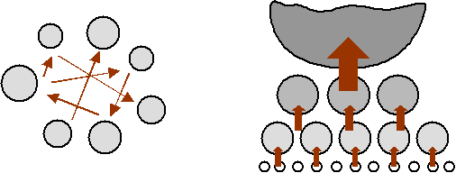
Слева
– равномерный рынок, деньги движутся между более-менее равновесными
участниками.
Справа
– рынки с концентрацией капитала, деньги непрерывно движутся снизу
в верх иерархии.
Сверху находятся очень крупные
цифры, затем с каждым слоем цифры всё меньше. Внизу только нули.
Чтобы производить массовые товары для этих нижних слоёв, необходимо,
чтобы у них появились не нули, но хотя бы какие-то циферки. Будем
называть эти цифры капиталом.
Владельцы собственности запустят
массовое производство только в том случае, если внизу иерархии
по какой-то причине появятся деньги. Производство для владельцев
– как насос богатства. Если владелец видит источник богатства,
он направляет туда свой насос и включает его. Если источника нет
– насос выключается.
Цифры внизу иерархии могут появиться
только в двух случаях:
1)
в результате неожиданного появления у бедных новых
накопительных товаров, или
2)
в результате обратного перераспределения
капитала с верху в низ иерархии.
Например,
если бы все бедные мира нашли у себя в огороде по шкатулке с золотыми
монетами (или нефть), то капиталисты бы немедленно организовали
производство нужных бедным товаров, чтобы заполучить эти монетки.
Но в реальной жизни такое происходит редко.
Естественное
перераспределение капитала
Как же возникает перераспределение
капитала, которое вызывает массовое производство? Оно может возникнуть
и без участия государства, в результате действия только внутренних
рыночных механизмов.
Для этого капиталист должен
увидеть:
§
приманку, то есть возможность получить новые предметы
поклонения и
§
конкуренцию за обладание ими.
Приманки могут быть получены
только из трёх источников:
1)
извне иерархии,
2)
от других крупных владельцев собственности,
3)
долг.
Источники
извне
Если золото
существует с другой стране, то издавна применялся военный способ
заполучить это золото. Предшественник нынешнего капиталиста нанимал
армию, платил ей частью имеющегося у него золота, рассчитывая
возместить расходы и получить прибыль, когда он захватит добычу.
Таким образом, и у массы солдат появлялось золото, которое они
могли потратить на свои потребности, это золото начинало свой
путь в экономике.
Точно также
происходит и с производством. Капиталист, увидев свободное золото
за границей, нанимает наёмников-рабочих, которые изготавливают
товары, которые вывозятся за границу в обмен на золото. При этом
другие капиталисты не сидят на месте, но тоже пускаются в погоню
за тем же золотом. Поэтому внутреннее временное перераспределение
от капиталистов к рабочим может оказаться в несколько раз выше,
чем внешняя приманка.
Начинается борьба
и за золото, которое попало в руки рабочих, что стимулирует новое
массовое производство.
Само зарождение промышленности,
первой мануфактуры, обязано появлению излишков золота. В середине
XVI века Европу
заполнило награбленное испанцами золото из Южной Америки. Оно
вызвало «революцию цен», товары подорожали в 2.5-4 раза. Поскольку
стоимость товаров относительно золота выросла, то производство
товаров стало приносить много золота. В 1560-е годы и начали открываться
мануфактуры в странах, которым не достались колонии и золото изначально
– в Голландии и Англии. В Испании мануфактуры не возникли, ибо
там источником золота были рабы-индейцы. Когда поступление золота
из Южной Америки иссякло, то оказалось, что золото Испании уже
утекло к владельцам заграничных мануфактур.
Та же история повторилась и
в Америке. До калифорнийской золотой лихорадки 1840-х годов Америка
была сельскохозяйственной страной с рабовладельческим производством.
Произведённые американскими рабами продукты отлично кормили Англию
и остальную Европу. Но как только в Америке появилось свободное
золото, возникла возможность выменивать его на промышленные товары
в хороших пропорциях. Это вызвало необходимость срочного строительства
заводов. Попутно пришлось даже «освободить» рабов, чтобы появилось
достаточно дешёвой рабочей силы. С 1860-х годов в США бурными
темпами развивалась индустрия.
Увы, источники захвата извне
быстро исчерпываются. По мере «окончания раздела» единственным
способом увеличения становится передел, будь то рынок внутри страны,
или международные рынки.
Для США следующим крупным источником
внешнего свободного золота стали Первая и Вторая мировая война.
Страны Европы были вынуждены обменивать своё веками накопленное
золото на товары и оружие из США, чтобы вести войну. Производство
товаров в обмен на европейское золото сделало промышленность США
самой развитой в мире.
Источники
изнутри
Вторым случаем, когда капиталист
временно передаёт часть золота вниз иерархии, является необходимость
конкурентной борьбы. Он может это делать как ради нападения, так
и ради вынужденной защиты.
В случае конкурентной борьбы
главным толчком к временному перераспределению денег вниз иерархии
являются новые технологии. При изобретении, например, паровоза,
капиталист рассчитывает захватить золото, которое обслуживает
рынки транспорта. Он нанимает множество рабочих для производства
паровозов, вагонов и железнодорожных путей. Рабочие получают деньги,
что стимулирует производство товаров, нужных рабочим.
Прослеживая историю развития
промышленности, мы увидим, что каждый раз новая технология – ткацкий
станок, паровой котёл, телеграф, телефон, радио, телевидение,
компьютеры или Интернет – сопровождалась бурным ростом. Каждая
такая гонка приводила и к разорению большого числа проигравших
её; но цель, перераспределение капитала, достигалась.
Проблемы
Проблемы естественных (то есть
рыночных, без вмешательства государства) способов перераспределения
состоят в следующем.
Рано или поздно всё золото в
мире поделено. Его ежегодная добыча мала относительно уже имеющегося
в мире. Новых «жирных» кусков, ради которых будет вестись борьба,
практически больше нет. В этом случае остаётся только два выхода:
1)
Приватизация общей собственности.
2)
Война за передел.
Проблема технологического перераспределения
в том, что новые технологии должны непрерывно сменять одна другую.
Если наступит пауза, то не будет и конкуренции. Если капиталист
не сможет рассчитывать на добычу и не будет бояться за своё золото,
то он не пошевелится и останется сидеть на своём сундуке.
Долг
как способ перераспределения
Последним естественным способом
перераспределения капитала вниз иерархии является долг (или кредит).
Рабочий берёт в долг у банка, магазина или у владельца фабрики.
Страны третьего мира берут в долг у богатых стран. Правительства
богатых стран берут в долг у владельцев капитала.
Но дав деньги в долг, владелец
капитала немедленно забирает их назад, обменяв на необходимые
бедному товары. Чтобы покрыть платежи по первому долгу, бедный
вынужден брать новый долг, и так далее, пока ему вообще не перестанут
давать.
Более половины всех «домашних хозяйств» в США имеют постоянные долги по кредитным карточкам,
которые измеряются тысячами долларов.
На короткое время долг может
поддержать производство. Выдача долга одному рабочему увеличивает
спрос на товары, поэтому капиталист нанимает другого рабочего,
чтобы удовлетворить этот спрос, зарплата этого второго вызывает
спрос на третьего и так далее. Но каждому последующему рабочему
достаётся всё меньше и меньше денег и работы. Это – сходящаяся
последовательность, стремящаяся к нулю. Когда новые кредиты перестают
выдавать, вся цепочка останавливается, а многие должники заканчивают
банкротством.
Если не вступают в силу другие
естественные или принудительные способы перераспределения, то
долг быстро приводит к ещё большей концентрации капитала.
II.
Принудительное
перераспределение капитала
Поскольку только
перераспределение капитала даёт толчок к производству, и естественного
перераспределения недостаточно, то государства применяют различные
способы принудительного перераспределения.
Целью перераспределения
является создание нового стимула, новой свободной порции золота,
за обладание которым начнётся новая конкуренция. Это новое золото
может быть впрыснуто как вниз иерархии (через помощь бедным),
так и может быть выставлено «с боку» (гранты на развитие или государственные
заказы, особенно на вооружения).
Другим стимулом
является создание условий, в которых возникает страх потерять
капитал в случае ничегонеделания его владельца.
Есть два основных
способа принудительно перераспределения:
1)
Налоги,
2)
Денежная эмиссия.
*
* *
Налоги
Налоги – теоретически
наиболее эффективный способ перераспределения. Прогрессивный налог
на доход, налог на собственность, налог на прибыль дают наибольшие
результаты.
Но поскольку
«конфискационные» налоги противоречат идеологии свободного рынка,
то они не приветствуются. В отличие от них, идеологически более
правильны налоги на продажу, на НДС, пошлины и тарифы. Но такие
налоги облагают независимо от богатства и не приводят к перераспределению
капитала сверху вниз иерархии.
Эффективность
налогообложения резко снижается из-за уклонения от налогов. Во-первых,
это оффшоры, где, например, ежегодно укрывается 30 процентов прибыли
корпораций США. Во-вторых, это принуждение стран снижать налоги,
создавать безналоговые зоны, в конкуренции между собой за бизнес
корпораций.
Денежная
эмиссия
Денежная эмиссия
(печатание новых денег) в не очень больших количествах хороша
тем, что она не особо заметна и не противоречит идеологии рынка
в целом.
Недостаток эмиссии
в том, что она пропорционально уменьшает состояние как богатых,
так и бедных. Другой недостаток – она может привести к сильной
инфляции, которая вредна для производства.
Окончательное
вымывание капитала наверх
Но почему золото, даже попав
вниз иерархии, всё равно рано или поздно опять скапливается наверху?
Когда заканчивается конкуренция
за новые куски золота, единственным источником для верха иерархии
остаётся то золото, которое было временно передано вниз иерархии.
Капиталист продолжает платить зарплату наёмному рабочему, но он
же забирает эту зарплату назад через товары.
Иными
словами, он начинает перепродажу труда рабочего ему
самому. Как и любая перепродажа, она делается с прибылью.
Поэтому внизу иерархии с каждой покупкой остаётся всё меньше
и меньше денег.
Маркс описал этот процесс через
присвоение прибавочной стоимости. Кейнс – через нарушение «эквилибриума».
На самом деле это обычная перепродажа.
Если после высасывания всех
денег наверх не применять принудительных способов перераспределения,
то производство сократится до уровня, необходимого для обслуживания
прихотей верхушки иерархии.
Причины
концентрации капитала
Теперь давайте
посмотрим, почему при объявленной полной свободе предпринимательства
процветают крупные, а не мелкие производители? Приведём некоторые
наиболее важные причины.
Организация
общества
В первую очередь,
такова изначальная организация общества, построенного на
постулатах религии денег. В сознании общества заложены неравенство
и иерархия. Целью жизни и критерием успеха считается максимальное
богатство.
Люди хотят видеть
лидеров, хотят покупать товары только у лучших фирм, ходить на
концерты звёзд; люди верят во власть лидеров.
Почему победитель
соревнований получает в несколько раз больше денег, чем проигравший,
хотя их разделили доли секунды на участке в сотни метров? Потому
что это заложено в правила. Поганые хотят видеть сильную разницу
между победителем и проигравшим.
Естественный
отбор
Во-вторых, в
силу естественного отбора. Власть получают те, кто лучше
научится получать прибыль. Чем лучше он умеет получать прибыль,
тем больше прибыли он получает. С другой стороны, раз выживает
сильнейший, то значит – выживает крупнейший.
Монополизация
рынков
Хотя формально
с монополиями ведётся борьба, в реальной жизни существует множество
косвенных способов монополизации.
Монополизация
рынка аналогична узурпации власти военным путём. Маленькая вооружённая
группа людей может держать под контролем гораздо большую
группу людей и не давать им возможности завладеть оружием. В рыночной
экономике монополизация происходит через контроль спроса и предложения
на определённые товары и через устранение конкуренции.
Распространённым
способом монополизации является скупка мелких компаний, пока они
не достигли заметного размера, поскольку антимонопольное законодательство
отслеживает только крупные слияния. Фирмы, контролирующие определённый
рынок, постоянно следят за всеми новичками в сопредельных областях,
и немедленно скупают их, если те демонстрируют какой-либо потенциал.
Антимонопольное законодательство
не запрещает и разорять конкурентов «рыночными» методами. Если
новичок сопротивляется, то большая фирма начинает против него
войну: ценовую на товары, переманивание ведущих сотрудников на
более высокую зарплату, прямые конкурентные разработки и так далее.
В такой войне можно победить, только найдя покровительство у другого
большого капитала. Лучшим примером каннибализма младенцев является
история компании Микрософт.
Другим косвенным
механизмом монополизации является установление высоких стартовых
барьеров. Например, чтобы развернуть новое производство автомобилей,
требуются очень большие деньги. Стоимость капитала для крупной
корпорации, которая уже котируется на бирже, гораздо ниже, чем
для начинающей. Выход на биржу сам по себе требует очень больших
вложений.
Подобно этому,
чтобы стать юристом или врачом, надо изначально очень много заплатить
за обучение и лицензирование. Сильным барьером служит и наследование
капиталов.
Классовая
монополия
Верхние слои
иерархии могут позволить себе не работать вообще, если их не устраивают
условия. Бедный вынужден соглашаться работать в любом случае,
даже за минимум. Пользуясь этим, богатые изначально устанавливают
оплату на таком уровне, чтобы он не представлял угрозы для капитала.
Маргинальность
преимущества
Особенностью
рыночной системы является маргинальность, то есть относительность
преимущества, которая идёт от псевдо-точности математики.
Например, если
есть два примерно одинаковых товара, из которых один стоит всего
на 5 процентов дороже, любой потребитель выберет более дешёвый.
Вне рынка, например, если вы выращиваете яблоки в своём саду,
никому и в голову не придёт взвешивать два яблока перед тем, как
их съесть.
Достаточно на
небольшое время сбить цены, чтобы разорить конкурента, а затем
монопольно диктовать свои цены. Чем выше капитал, тем легче произвести
такую операцию.
Неравные
условия на рынках
Владельцы большего
капитала автоматически получают лучшие условия на рынке
по сравнению с владельцами мелкого. Для них ниже закупочные оптовые
цены, ниже банковские кредиты, лучше обслуживание и так далее.
Кроме того, чем выше тираж, тем меньше затраты.
Налоговые
законы
Налоговые законы
поощряют слияние капитала. Если корпорация покупает другую
корпорацию, то она сэкономит на налогах.
Ограниченная
ответственность
Как мы уже отмечали
в 3-й главе, корпорации несут только ограниченную ответственность.
Учреждая группу фирм, владелец капитала имеет возможность одновременно
и сосредоточить в своих руках большую власть, и уйти от неприятных
последствий своих действий. Хотя формально такие фирмы независимы,
реально они управляются одним и тем же лицом или одной и той же
группой лиц.
В конце концов,
если человек убьёт другого человека, то он сядет в тюрьму. Если
человека убьёт корпорация, то она просто заплатит штраф.
Стартовый
капитал
И, наконец,
законы дают корпорациям прямые преимущества по сравнению
с людьми.
Рассмотрим такой
пример. Если существующая корпорация получила доход в 1 миллион
долларов, и хочет использовать их на своё расширение, то с этих
денег она не заплатит налог.
Но если частное
лицо захочет создать такое же производство в 1 миллион долларов,
то ему придётся заработать гораздо больше, чем 1 миллион, чтобы
сначала заплатить с этого дохода подоходный налог.
При этом совокупный
доход корпораций налогом не облагается; налог на прибыль корпораций
составляет 10-20 процентов. Минимальный подоходный налог
с человека, то есть налог на все его доходы, а не на прибыль,
составляет от 25 до 60 процентов.
Полная дискриминация
людей видна даже в вопросах еды. Корпорации не платят налог с
денег, потраченных на бизнес-обеды и бизнес-развлечения, но люди
обязаны платить налог с дохода, истраченного на еду, как и с любого
дохода.
* * *
Чтобы лучше
понять кризисы накопления, воспользуйтесь моделью одного банка.
Представьте, что в мире есть только один банк, и каждый человек
держит в нём счет и ложит на этот счёт все свои деньги.
Тогда прибыль
одного из вкладчиков не может получиться иначе, как снятием денег
со счёта другого вкладчика. Более матёрые так или иначе постепенно
переведут все деньги на свои счета, и движение как денег, так
и товаров остановится.
Роль этого одного
всемирного банка раньше играло золото. Как мы увидим далее, сегодня
роль одного банка для доллара выполняют компьютеры Федеральной
резервной системы США и компьютеры Европейского банка – для евро.
Принудительное
ограничение концентрации
Поскольку концентрация капитала
в религии денег возникает естественным образом, то, начиная с
первой половины XX
века, применяется несколько способов её принудительного ограничения
через законы.
Минимальная
заработная плата
Законы о минимальной
заработной плате ставят нижнюю планку, обязывающую платить зарплату
чуть выше уровня бедности.
Профсоюзы
Объединяя рабочую
силу, профсоюзы ограничивают классовую монополию и заставляют
владельцев капитала платить более высокую, чем минимальная, зарплату.
Законы
о труде
Применяется
ограничения рабочего дня до 35-40 часов в неделю, запрещение детского
труда; требуется соблюдение техники безопасности.
Хотя эти меры могут показаться
само собой разумеющимися, они появились сравнительно недавно,
далеко не сами по себе, и в довольно кровавой борьбе с владельцами
капитала.
Например,
с 1888 по 1908 год в США от несчастных случаев на производстве
погибло 700 тысяч рабочих. Это эквивалентно сотне смертей каждый
день в течение 20 лет. Для сравнения, в те годы вся иммиграция
в США составляла 300-400 тысяч человек в год.
Детский труд был ограничен в
США только в 1910-х годах. Он даже не был запрещён в принципе.
Из торговли между разными штатами были исключёны товары, произведённые
детьми. Внутри штатов детский труд не отменялся, более того, до
1930-х годов применялся ночной детский и женский труд. Основные
ограничения на продолжительность рабочего дня были введены только
в результате Великой депрессии 1930-х годов.
Проблемы
Для борьбы со
всеми этими ограничениями у капитала есть очень простые способы.
Он выносит производство в страны, где нет законов об охране труда
и профсоюзах, или туда, где законы не соблюдаются.
В наши дни этот
процесс является частью глобализации. За последние десять лет
тысячи нормально работающих производств были полностью закрыты
в США, Канаде и других развитых странах и вынесены в Мексику,
Азию, Китай.
МЗП в Мексике
в 10 раз ниже, чем в США, средняя рабочая неделя в Китае – 80-90
часов, а за правами детей в Малайзии никто не смотрит.
Если труд необходимо
использовать внутри страны, например, на строительстве дорог,
в сельском хозяйстве или в обслуживании, то применяется труд заключённых
и нелегальных иммигрантов, которые не защищены законами. Всё больше
тюрем в США переходит под управление частных коммерческих фирм,
которые продают труд заключённых. Количество нелегальных
иммигрантов, в основном из Мексики, только в одном штате Калифорния
уже превысило 2.2 миллиона человек.
Кризисы
обращения
Рассмотрим возникновение экономических
кризисов с точки зрения обращения денег.
Производство товаров
и обращение денег
Обычно считают,
что цены на товары и объёмы производства товаров определяются
спросом и предложением. Давайте посмотрим, как на цены и на производство
влияет количество денег, находящихся в обороте.
Опять представим
деньги в виде ослов, которые перевозят стоимость товаров между
сознаниями людей. Представим, что некоторое более-менее постоянное
количество ослов обслуживает обмен зерном.
Что произойдёт,
если выдастся урожайный год, и зерна окажется больше, чем обычно?
Возможно две ситуации. Если количество ослов останется неизменным,
то на каждого осла придётся грузить больше зерна, и цены снизятся.
Если количество ослов увеличится, то цены можно будет сохранить
неизменными.
Откуда могут
взяться дополнительные ослы? Они могут прийти только из соседних
рынков, например, с рынка мяса. Но тогда уменьшится количество
ослов на рынке мяса, и упадут цены на рынке мяса. В этом случае
производители мяса захотят удержать цены на прежнем уровне. Для
этого они могут привлечь ослов с третьего рынка, но тогда начнётся
падение цен на третьем рынке.
Соответственно,
для удержания цен, единственным выходом из этого порочного круга
станет уменьшение количества мяса, которое находится на рынке,
то есть снижение производства мяса, или увеличение его
экспорта в другие страны (перевозка на других ослах).
Рассмотрим обратную
ситуацию. Мы хотим увеличить производство. Пусть на рынок откуда-то
поступают новые ослы. В этом случае у производителей есть два
выхода – (1) увеличить цены и (2) увеличить производство новых
товаров.
Первым желанием
производителя и торговца, естественно, будет простое увеличение
цены. Производство, а не увеличение цены, возникнет только при
одновременном соблюдении следующих условий:
1.
несколько торговцев будут конкурировать между собой
и
2.
будет физическая возможность производить больше
и
3.
торговцы будут уверены, что новые деньги – это
настоящие ослы, настоящие деньги, а не обесценивающиеся бумажки.
Обобщая эти
процессы на общество, уменьшение количества денег в обращении
почти всегда приведёт к падению цен, к падению производства и
к безработице. Увеличение денег в обращении может привести или
к росту цен (инфляции), или к увеличению производства, в зависимости
от остальных условий.
* * *
Используя модель
одного банка, представьте, что объём торговли между его вкладчиками
всегда будет ограничен количеством денег, имеющихся в банке. В
определённый момент или остановится дальнейшее производство, или
будет необходимо создание новых денег.
Концентрация капитала
и обращение денег
Как связаны
процессы концентрации капитала и процессы денежного обращения?
Посмотрим на
накопление капитала как на борьбу за ослов. Тогда смысл накопления
заключается в том, чтобы завладеть как можно большим количеством
ослов, загнать их в своё стойло.
Но при этом
никто не стремится к тому, чтобы ослы простаивали. Хозяин всегда
хочет занять ослов какой-либо работой или дать их в долг под процент.
Только в крайнем случае, если нет никаких возможностей для получения
прибыли, хозяин будет держать их в стойле без дела.
Если идёт перераспределение
капитала с элитного верха в массовый низ иерархии, то это не значит,
что деньги из одного сундука перекочевали в другой. При работающем
производстве это означает, что деньги начинают обращаться на рынках,
которые обслуживают массы людей, от чего увеличивается
массовое производство (или растут цены).
Если же идёт обратное высасывание
капитала снизу вверх, то деньги покидают рынки, обслуживающие
массы людей.
По мере того,
как с массовых рынков вымываются деньги, единственный способ сохранить
и объёмы производства, и прибыль – это снизить и цену,
и затраты. В этом находится ещё одна из причин упрощения и опримитивливания
товаров.
Выведение денег
из оборота
Что происходит с деньгами, которые
выведены с массовых рынков? Они скапливаются либо в сундуках,
либо на рынках, обслуживающих верхи.
Такими рынками являются накопительные
товары – предметы роскоши, недвижимость, драгоценности. Естественно,
что когда на таких рынках появляются новые деньги, это вызывает
рост цен на эти товары и ещё более увеличивает разрыв между богатыми
и бедными.
Другим распространённым применением
свободных денег являются казино, скачки, азартные игры, лотереи,
ставки в букмекерских конторах. На этих «рынках» ничего не создаётся,
но деньги регулярно переходят из рук в руки. В конце концов, поскольку
производство – это только способ получения прибыли, то почему
не получать прибыль напрямую, просто играя в рулетку?
Наконец, деньги можно просто
сложить в сундук. Выведение денег из оборота автоматически приводит
к тому, что цены на рабочую силу, на труд низов падают. То есть
даже если ничего не делать, то деньги сами по себе будут расти
в цене, на них можно будет купить всё больше и больше товаров
и слуг.
Очень важно, чтобы свободные
деньги не занялись спекуляцией на оставшиеся производимые товары.
С этой целью существует множество законов, запрещающих заниматься
скупкой, например, сельскохозяйственной продукции.
Сохранение пропорций
в иерархии
Для удержания иерархии власти очень важно,
чтобы сохранялись пропорции между стоимостями товаров,
сохранялась огромная разница между стоимостью состояния богатого
и стоимостью труда бедного. Не столь важны их абсолютные значения, но важна
разница между ними.
Пропорции между стоимостями
товаров соответствуют пропорциям между количеством денег, обращающихся
на соответствующих рынках. Соответственно, управляя количеством
денег на рынках, можно управлять положением классов, стран и народов
во всемирной иерархии в целом.
Заметим, что стоимость временных
товаров, которые живут очень ограниченный период времени и находятся
в постоянном движении, очень чувствительна к наличию денег в обороте.
В отличие от них, накопительным товарам совершенно не обязательно
активно участвовать в обороте, чтобы сохранять и увеличивать свою
стоимость.
Чтобы прокормить себя, рабочий
вынужден постоянно продавать свою рабочую силу, не важно по какой
цене. Крестьянин вынужден продавать свой урожай, потому что иначе
он испортится. Производитель автомобилей вынужден постоянно продавать
их, иначе у него переполнятся склады. Но нет никакой спешки в
том, чтобы продать слиток золота, картину или недвижимость, если
их владельца не устраивает текущая предлагаемая цена.
*
* *
С другой стороны, важны взаимные
пропорции между ценами (1) на товары необходимости, (2) на товары
удовольствия и (3) на статусные товары. Если деньги с рынков статуса
ринутся на рынки удовольствий, или с рынков удовольствий – на
рынки необходимого, это приведёт к сильному росту цен на последние.
Так что не всегда плохо, если
богатые вкладывают свои деньги в бриллианты и проводят свою жизнь
в офисах, чтобы заполучить ещё больше бриллиантов. Это даёт возможность
небогатым людям иногда слетать в отпуск и вкусно поесть.
Целью управления обращением
денег будет, с одной стороны, сохранение доступных цен на товары
первой необходимости, с другой стороны – сохранение пирамиды власти.
Идеальное золото
и пустой товар
Итак, мы подошли к тому, что
для преодоления экономических кризисов нам нужен постоянный источник
золота, которое станет приманкой для верхов и вызовет непрерывное
естественное перераспределение капитала в гонке за ним. Нелепо
ставить всю экономику мира в зависимость от очередной золотой
лихорадки или от ожидания открытия нового месторождения или новой
технологии.
В разные годы, когда не хватало
нового золота, для борьбы с кризисами предлагали ввести в оборот
серебро и платину, но эти рецепты несли много минусов.
Следует придумать идеальное,
полностью управляемое золото. Подобно тому, как Папа Римский может
освящать мощи и иконы по своему желанию, религия денег должна
иметь возможность освящать свои идолы поклонения по желанию.
Идеальное золото:
–
должно быть доступно в любой момент;
–
должно быть доступно в любых количествах;
–
можно как мгновенно ввести в оборот, так и мгновенно
вывести;
–
можно вкинуть как вниз иерархии, чтобы организовать
спрос, так и сбоку, чтобы создать конкуренцию за право владения
им;
–
должно управляться весьма ограниченным кругом лиц.
Дополнительные
условия:
–
вместо создания новых денег, надо возвращать в оборот существующие
деньги, отдавая взамен идеальное золото;
–
идеальное золото должно всегда расти в цене относительно
денег, чтобы денежные бумажки не росли в цене, убивая стимулы
к производству;
–
если раньше деньги-ослы были автоматически привязаны
к физическому золоту, то теперь деньги-ослы должны быть привязаны
к идеальному золоту.
Без постоянного выпуска нового
идеального золота невозможно обойтись, ибо когда идёт непрерывное
движение денег снизу в верх иерархии, то рано или поздно всё выпущенное
скапливается наверху. Следовательно, идеального золота со временем
должно становится всё больше и больше.
*
* *
Как мы помним, золото было всего
лишь одним товаром, который стал со временем всеобщим эквивалентом
товаров. Соответственно, идеальное золото тоже должно быть неким
товаром.
К какому товару проще всего
привязать идеальное золото? К идеальному накопительному
товару. Какой товар идеален? Пустой товар; товар, не существующий
в реальности; товар, который существует только в нашем воображении.
Этот товар называется государственный долг
Соединённых Штатов Америки. На сегодняшний день его стоимость
составляет... минус 6 800 000 000 000 долларов. Это – анти-товар, но он прекрасно выполняет функции
идеального золота.
С осени 2002 года долг растёт с примерной скоростью
1 700 000 000 долларов в день. За то время, пока вы читаете это одно предложение,
долг вырастает на 60 000 долларов.
Правительство США берёт в долг,
но долги никогда не отдаёт. Взятое в долг у хищников оно бросает
назад им же в качестве новой приманки. Глядя на цифру долга, подумайте,
сколько богатства было перераспределено с его помощью, учитывая,
что очень большую часть долга вернули, просто напечатав бумажки,
точнее просто введя цифры в память компьютеров.
Если раньше вся конкуренция,
все гадости и подлости в бизнес-мире велись за обладание презренным
жёлтым металлом, то теперь они ведутся просто за право дать
в долг США. Браво, жрецы религии денег!
Кризисы и пирамиды
I.
Пирамиды и спекулятивные
эпизоды
Поскольку стоимость – это относительное
понятие, то вся иерархия стоимостей, соотношение стоимостей в
целом на все товары, кроме необходимых для жизни, – это одна большая
пирамида религии денег.
Соотношение цены зерна и мяса
более-менее отражает соотношение затрат на их производство. Но
соотношение цены зерна, модного платья и квартиры в престижном
районе, отражает только воспринимаемые удовольствие и статус,
которые достигаются от обладания этими товарами. Так что в принципе
любой рост относительной стоимости таких товаров является пирамидой.
В более узком смысле, пирамиды
– это рост цен на традиционные накопительные товары – золото,
недвижимость, драгоценности.
Пирамиды и собственность на
средства производства – главные способы удержания власти в религии
денег. Пирамиды создаются для того, чтобы рост цен на накопительные
товары обгонял рост цен на временные товары, для того, чтобы стоимость
труда всегда была намного ниже стоимости богатства; чтобы человек
был ничтожен по сравнению с идолом – по сравнению с блестящим
камешком и с куском металла.
Пирамиды существуют вечно, но
в их жизни можно выделить явно выраженные этапы. Периоды резкого
роста, которые обычно называют спекулятивными «пузырями», и следующие
за ними периоды резкого спада. Создание простейшей пирамиды почтовых
марок мы описали в предыдущей главе.
Обычно, когда говорят о пирамидах, имеют в
виду именно эти отдельные спекулятивные эпизоды. Некоторые пирамиды, вроде АО МММ, изначально
были задуманы как короткоживущие, и они являются просто спекуляциями.
Мы будем говорить о пирамидах
как о постоянном и долгосрочном явлении, и выделять спекулятивные
эпизоды как временные обострения колебаний.
Пирамиды как причина
роста и причина кризиса
Пирамиды могут как стимулировать
производство, так и создавать кризисы.
Если, например, недвижимость
растёт в цене, то эта пирамида становится как бы вновь найденным
«золотом», которое будет новой приманкой, новым куском, ради обладания
которым будет развиваться производство товаров.
Но та же пирамида станет тормозить
производство, если деньги (ослы) вместо того, чтобы обслуживать
производство, перебегут на рынок недвижимости и займутся прямой
спекуляцией недвижимостью.
Какой из вариантов произойдёт,
зависит от того, можно ли будет производством товаров захватить
владение новой недвижимостью. Если в цене растёт недвижимость,
принадлежащая нижним слоям иерархии – то можно. Если верхним слоям
– то эффективнее прямая спекуляция.
И наконец, обвал пирамиды может
вызвать очень сильный кризис производства. Обвал приведёт к тому,
что, с одной стороны, уменьшится воспринимаемое богатство. С другой
стороны, обвал посеет страх потерять деньги и резко остановит
всякое движение капитала.
Чем сильнее рост пирамиды, чем
больше спекуляция, тем большие прибыли можно получить; тем более
она привлекательна для капиталистов, тем сильнее она может стимулировать
перераспределение капитала и производство. С другой стороны, чем
сильнее спекуляция, тем сильнее обвал, тем сильнее кризис после
крушения пирамиды.
*
* *
Следует понимать, что хотя мы
говорим о том, сколько денег вложено в ту или иную пирамиду, перемещениям
денег соответствует перемещение товаров, а в пирамиду нельзя вложить
реальные товары. Физически нельзя вложить зерно или нефть в недвижимость
или в бриллианты.
Вместо этого товары просто перераспределяются
между участниками пирамиды. Значительная часть вложенных в пирамиду
товаров идёт на потребление людьми, которые выключаются из реального
производства и заняты обслуживанием пирамиды – банкиров, агентов
по недвижимости, журналистов, ювелиров, оценщиков, аналитиков,
экспертов, сэйлсменов, маркетинг, рекламистов и так далее.
Чем больше пирамида, тем больше
в неё вовлечено людей, тем больше товаров съедает прислуга пирамиды.
Главные пирамиды
религии денег
С момента зарождения
религии денег самой важной пирамидой было золото. Вторичными –
драгоценности, предметы искусства, роскоши.
Постепенно,
по мере идеализации денег, по мере их отрыва от золота, и введения
«идеального золота», на первое место вышли три пирамиды:
–
недвижимости,
–
долга,
–
акций (средств
производства).
Для устойчивости
пирамиды очень важно, чтобы она имела широкую основу и сужалась
к верху. То есть, чтобы цены внизу были более-менее доступны массе,
а вверху – недоступны. Отчасти поэтому законами запрещена или
ограничена спекуляция такими товарами, как продовольствие, энергия,
базовое сырьё.
С другой стороны,
должен существовать механизм принудительного вовлечения в пирамиду
общества всех его членов. Для этих целей лучше всего подходит
недвижимость и земля. Каждый человек нуждается в жилье, и количество
земли заведомо ограничено.
*
* *
Структура «горизонтальной»
пирамиды недвижимости повторяет структуру воображаемой «вертикальной»
пирамиды положения в обществе.
Говоря о недвижимости,
следует понимать, что в Орде стоимость собственно строения (стройматериалов,
коммуникаций и так далее) обычно составляет 10-30 процентов от
стоимости недвижимости. 70-90 процентов составляет стоимость земли.
При этом стоимость
земли в одном и том же городе может резко отличаться в разных
его районах, например в Нью-Йорке в Манхэттене и в Гарлеме. Это
связано не с качеством земли, но исключительно с престижностью
места, с тем, какого «класса» люди селятся в том или ином районе.
Если в прошлые
сельскохозяйственные века стоимость земли во многом определялась
её плодородием, то по мере развития индустриального и информационного
общества, в которых источником власти не является контроль продовольствия,
плодородие земли вообще перестало влиять на её стоимость. Сегодня
лучшие сельскохозяйственные земли стоят во много раз меньше, чем
клочок земли в престижном районе.
Механизм пирамиды
недвижимости
Почему земля
в Нью-Йорке стоит гораздо дороже земли в Нижнем Новгороде, а земля
в Нижнем Новгороде – гораздо дороже, чем точно такая же земля
в 100 километрах от Нижнего Новгорода?
Как мы помним,
стоимость товаров находится в прямой зависимости от (1) объёма
денег, обслуживающих рынки этих товаров, и (2) от количества товаров.
Поскольку количество земли в городах практически неизменно, то
стоимость земли зависит только от объёма вращающихся денег.
Значит, надо
замкнуть деньги, вращающиеся в Нью-Йорке и пустить их на увеличение
стоимости недвижимости. В США это делается через механизм ипотеки
(mortgage), в
России – через простое накопление.
*
* *
Чтобы купить жильё в США, в
стандартном случае человек должен заплатить 25 процентов от общей
стоимости дома, а остальные 75 процентов он получает в долг от
банка в рассрочку, обычно на 25 лет. Ежемесячные выплаты за дом
составляют порядка 30-40 зарплаты, а с учётом налогов на недвижимость
и затрат на обслуживание дома – 50 процентов и более.
Естественно,
что права на дом принадлежат банку, а не человеку, до тех пор,
пока дом не будет полностью выплачен.
Таким образом,
одной рукой деньги даются человеку, другой рукой деньги у него
забираются. Эти деньги можно было бы вообще выкинуть из оборота.
Они просто совершают путь со счёта капиталиста, когда он выплачивает
зарплату, обратно на счёт капиталиста, когда он получает выплату
по ипотеке (обычно выплаты по ипотеке происходят в тот же самый
день, когда платится зарплата). В этом случае зарплата бы уменьшилась
вдвое, но и жильё бы стало стоить 25 процентов от нынешней стоимости,
то есть более-менее соответствовало затратам на строительство.
Но тогда и рабочий, и капиталист
почувствовали бы себя беднее. И главное – нарушилась бы пирамида.
Для любой пирамиды важно, чтобы её «правильность» подтверждалась
нижестоящими, чтобы был постоянный приток новых желающих купить
недвижимость в том или ином месте. Пока есть такие желающие, они будут обменивать
произведённые ими товары на землю просто потому, что им кажется,
что земля стоит дорого.
Если бы недвижимость
в Нью-Йорке, в Нижнем Новгороде и в китайском райцентре стоила
примерно одинаково, то какой был бы смысл качать российскую нефть
и завозить миллионы тонн китайских товаров в обмен на землю в
Нью-Йорке?
Имея идеальное
золото, и возможность впрыскивать деньги в определённые точки
системы, можно легко регулировать соотношение цен и мировую иерархию.
Текущий совокупный долг американцев по ипотеке превышает 7 триллионов
долларов. Это даже больше, чем весь государственный долг США,
который составляет 6.8 триллиона, как мы отмечали выше.
Небольшой трёхкомнатный дощатый
дом в Ванкувере с участком земли в 3-4 сотки стоит примерно 330
лет труда китайского рабочего при 80-часовой рабочей неделе.
Российский бизнес
скупает недвижимость в Европе.
*
* *
Более того,
25-летний заем и накрепко привязывает работника к корпорации,
делает его гораздо более сговорчивым, усиливает конкуренцию за
право удержаться в том или ином районе или переехать в лучший
район. Теперь капиталист владеет уже не только временем наёмного
работника, но и его жилищем.
С другой стороны, ипотека является
удобным способом регулировать трату денег во время кризисов. Изменение
банковской учётной ставки, то есть процента по кредитам, приводит
к уменьшению или к увеличению процента зарплаты, который уходит
на выплату по ипотеке. Таким образом, банковская система получает
возможность напрямую менять реальную зарплату рабочего.
Есть ещё и механизм
обратной ипотеки. Например, если дом выплачен на 60 процентов,
то можно получить от банка обратно 60 – 25 = 35 процентов от стоимости
дома в наличных, которые можно потратить на что угодно (при этом
счётчик выплаты опять вернётся в положение «25 лет»).
В моменты кризисов производство
может продолжаться за счёт перехода в собственность верха иерархии
всё большей доли жилья низа иерархии.
Пирамида арендной
платы, производная от стоимости недвижимости, работает примерно
тем же образом – деньги выдаются только для того, чтобы их забрать.
Но в случае кризиса, при аренде нет подушки собственности. И капиталист
несёт убытки от отсутствия арендаторов, и наёмному работнику негде
жить. Поэтому продажа жилья предпочтительнее.
Пирамида долга
Вторая по значимости
после пирамиды недвижимости – это пирамида долга. Долг вызывает
перераспределение капитала, а необходимость отдать долг стимулирует
производство.
Более того,
большая пирамида долга, как и пирамида недвижимости, создаёт у
её участников ощущение владения новым богатством и запускает конкурентную
гонку за обладание этим новым богатством. Выпуск всё новых долговых
обязательств США ведёт к воображаемому увеличению богатства их
держателей и к конкуренции за обладание этими бумажками.
Отличие пирамиды
долга от иных пирамид в только том, что если в остальных пирамидах
значения собственности её участников имеют положительные значения,
то в пирамиде долга у одной части участников пирамиды – кредиторов
– положительные значения, у другой части – заёмщиков – отрицательные.
Хотя внешне
кажется, что пирамида долга сильно отличается, скажем, от пирамиды
недвижимости, на самом деле механизмы как создания, так и крушения
всех пирамид весьма схожи. Чтобы получить из пирамиды недвижимости
пирамиду долга, на графике роста стоимости недвижимости просто
мысленно подвиньте ось Х вверх на несколько десятков или сотен
тысяч долларов. Тогда если цена на недвижимость опустится ниже
новой оси Х, то мы получим эквивалент негативной стоимости собственности.
Единственной
серьёзной особенностью пирамиды долга является то, что её крах
не опосредованно, но напрямую может обанкротить людей, которые
не участвовали в ней. Если падает в цене недвижимость, то немедленно
разоряются только владельцы недвижимости, а на остальных действует
спад в экономике в целом. Если рушится пирамида долга, то мгновенно
банкротятся банки, а вместе с ними и вкладчики банков, которые
не участвовали в пирамиде долга.
*
* *
Давайте посмотрим, как пирамиду
долга может создать обычный человек, вообще не имея денег. В банках
можно получить кредитные карточки, минимальная выплата по которым
будет составлять 3 процента в месяц от суммы долга. Человек заводит
2 карточки, и просто перекидывает раз в месяц эти 3 процента с
одной карточки на другую. Постепенно он выбирает лимиты кредита
по обеим карточкам, и тогда он заводит третью карточку, с которой
оплачивает две предыдущие, затем четвёртую карточку, и так далее.
Примерно таким
же образом корпорации и банки бесконечно одалживают деньги друг
у друга. При этом, пока они делают минимальные выплаты, все довольны
и все богаты.
Управление пирамидой
долга сводится к тому, чтобы выдавать кредиты тем, кому надо;
и не давать кредиты тем, кому не надо. Через размеры кредитов
можно устанавливать пропорции объёмов денег, обращающихся на соответствующих
рынках, и стоимость соответствующих товаров.
*
* *
Если пирамида
долга создана как открытая система, то она может бесконечно работать
за счёт некого третьего, внешнего источника, из которого будут
черпаться золото или деньги для выплаты процентов. Например, человек,
взявший долг у банка по кредитной карточке, может покрыть долг,
устроившись на работу в третью фирму.
Но если мы рассмотрим
всё общество, которое является замкнутой системой, в которой
происходит постоянное движение капитала снизу в верх иерархии,
то чтобы пирамида не рухнула, остаётся два выхода.
Первый – периодические
дефолты и прощение долгов. Нижние слои вынуждены постоянно делать
новые займы, чтобы покрыть выплату процентов по предыдущим. Естественно,
что каждый раз займы будут даваться под всё больший и больший
процент, поскольку по мере роста долга будет увеличиваться риск
невыплаты. В конечной счёте, дефолт рано или поздно неизбежен.
Второй – необходимо
постоянно подпечатывать деньги или иные бумажки, или создавать
новое «богатство», новую собственность, которые будут идти на
выплату процентов. Естественно, что проще всего создать пустой
товар.
*
* *
По принципу
пирамиды долга построена и так называемая схема Понзи, которая
хорошо известна в России по МММ, Олби и ГКО. Отличие схемы Понзи
от других пирамид долга в том, что её создатели и не предполагают
отдать изначальные вклады, но просто выплачивают проценты за счёт
вновь приходящих вкладчиков. Рано или поздно приток вкладчиков
иссякает, выплачивать проценты становится нечем, наступает банкротство.
Ниже мы рассмотрим
интересные исторические примеры роста и крушения пирамид долга
и недвижимости. Затем мы рассмотрим третью главную пирамиду религии
денег, пирамиду акций.
II.
Теория большего дурака
Как возникают пирамиды, и в
особенности спекулятивные взрывы? В основе всех пирамид лежит
простая теория – Теория большего дурака (в учебниках по
инвестициям она так и называется – Greatest
Fool
Theory).
Как мы помним, сутью счётной
книги является не производство и не создание чего-либо, а простая
перепродажа. Тот же принцип перепродажи лежит и в основе пирамиды.
Поганый покупает товар, на котором строится пирамида, только ради
того, чтобы впоследствии перепродать его с прибылью другому.
Как всегда в перепродаже, имеет
значение не столько абсолютная цена покупки, сколько разница между
ценами. Не важно, купит ли «инвестор» дом, на строительство которого
затрачено 50 тысяч, за 1 миллион или за 2 миллиона. Важно, найдёт
ли он такого дурака, который купит у него этот дом за ещё большие
деньги.
Поскольку каждый поганый считает
себя особым сверхчеловеком, который умнее всех остальных, то такое
сборище сверхумников, считающих остальных дураками, в целом может
вздуть цены на абсолютно любой товар за короткое время на бесподобные
высоты. Как ни странно, в итоге в дураках оказываются все.
Фазы спекуляций
При наблюдении за спекуляциями
можно чётко выделить 4 фазы их развития.
Как мы помним, в религии денег
человеком управляют два чувства – страх и жадность. От соотношения
этих чувств и зависит переход спекуляции из одной фазы в другую.
Мы рассмотрим эти фазы на примере
последней крупной спекуляции – рынка технологических акций 1990-х
годов. Предметом спекуляции могут быть любые товары и символы,
а не только акции, но на примере акций закономерности видны лучше
всего.
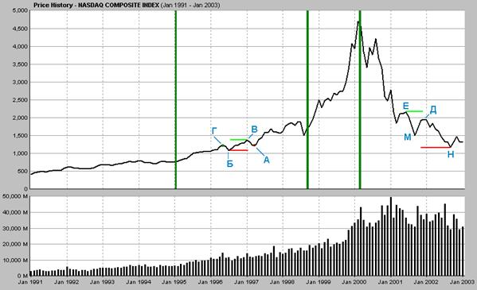
График
роста стоимости индекса технологических акций Nasdaq
за 1991-2003 годы.
На
нижней части графика показаны объёмы торгов в миллионах штук акций.
1.
Зарождение
На участке зарождения спекуляции
преобладает осторожность. Страх почти равен жадности. Никто не
знает, будет ли спекуляция успешна. Число участников пирамиды
невелико, это в основном профессионалы. Цены и объёмы торгов растут,
но умеренно.
На графике этому этапу соответствует
период с начала 1991 года до начала 1995 года.
2. Рост
На рост цен
начинают обращать внимание сторонние люди. В пирамиду резко возрастает
поток денег. Цены начинают расти очень стабильно, вследствие чего
количество вкладчиков тоже увеличивается; цены растут ещё лучше.
Растут объёмы торгов.
Жадность преобладает
над страхом. Люди стремятся как можно скорее принять участие в
пирамиде, обогнать остальных. Отдельные падения цен воспринимаются
как краткосрочные корректировки, как шанс скупить товар по дешёвке.
Тот, кто не участвует в пирамиде, выглядит идиотом.
На графике – период от начала
1995 года до конца 1998 года.
3. Эйфория
Страх падает
до нуля, жадность возрастает до бесконечности. Кажется, что наступило
время всеобщего и бесконечного богатства. Цены идут вверх как
воздушные шары, объёмы торгов удваиваются и утраиваются.
Кажется, что
цены будут расти всегда, и богатыми будут все. Даже последние
скептики бегут в пирамиду.
На графике – период от конца
1998 года до марта 2000 года.
4. Крушение
Если последние
скептики включились в пирамиду, это означает, что все ресурсы
по развитию пирамиды исчерпаны. Как только приток денег извне
иссякает, по законам денежного обращения цены расти больше не
могут.
Любая попытка
выйти из пирамиды и вывести из неё деньги заканчивается снижением
цен. Это снижение болезненно воспринимается остальными. Вдруг
страх не получить максимальную прибыль становится выше, чем жадность.
Начинается лавинообразное падение цен, и жадность полностью уступает
место страху.
Идёт повальная паника, желание
избавиться от товаров любой ценой. Объёмы торгов могут оставаться
высокими, так как участники пирамиды мечутся, пытаясь продать
свой товар, а при возможности и частично покрыть убытки. Профессиональные спекулянты активно играют на
понижение одних и временное повышение стоимости других товаров.
Цены падают,
пока они не достигают некоего дна, когда держатели товаров уже
не видят смысла продавать их по столь низкой цене.
На графике этап крушения начался
в марте 2000 года и не закончился до начала 2003 года.
*
* *
Рост любой пирамиды
идёт волнами. За подъёмами следуют спады, за спадами – новые подъёмы.
Чтобы понять,
находится ли та или иная спекуляция в стадии роста или падения,
можно воспользоваться двумя простыми правилами. Надо выделить
точки локальных подъёмов и точки локальных спадов.
§
Если текущий спад (точка А на графике) не достигает
уровня предыдущего локального спада (точка Б), то текущий спад
– временный, и идёт общий рост.
Если
текущий подъём (точка В) превышает предыдущий локальный подъём
(точка Г), то идёт общий рост.
§
Если текущий подъём (точка Д) не достигает уровня
предыдущего подъёма (точка Е), то текущий подъём – временный,
и идёт общий спад.
Если
текущий спад (точка Н) ниже уровня предыдущего спада (точка М),
то идёт общий спад.
Для удобства
определения уровней на графике можно провести горизонтальные линии
от предыдущих спадов (показаны красным цветом), и от текущих подъёмов
(показаны зелёным цветом).
История спекуляций
Давайте рассмотрим некоторые
спекулятивные пузыри, оставившие наиболее замечательные следы
в истории.
Мания
тюльпанов в Голландии XVII века
Не прошло и
сотни лет с момента зарождения религии денег, как возникла первая
масштабная спекуляция. Естественно, что она возникла именно в
той стране, которая первой стала поклоняться новому идолу.
В 1562 году
груз луковиц тюльпанов прибыл в голландский порт Антверпен из
Константинополя. В последующие годы тюльпаны приобрели в Голландии
большую популярность. К началу XVII
века владение луковицами стало считаться признаком богатства,
и из-за ограниченного количества луковиц они начали быстро расти
в цене. К 1636 году одну луковицу уже можно было поменять на карету
с двумя лошадьми и полным набором упряжи.
Луковицы так
часто переходили из рук в руки, что у их владельцев даже не было
времени посадить тюльпаны в землю. Луковицами торговали на фондовой
бирже, в тавернах и на специально отведённых площадках во всех
крупных и мелких городах Голландии.
Люди массово
закладывали свои дома и своё имущество. Все деньги вкладывались
в тюльпаны в расчёте на быструю и гарантированную прибыль.
Невиданные прибыли
привлекли иностранцев, и деньги из-за границы рекой полились в
Голландию. Это вызвало резкий рост цен в Голландии и на остальные
товары из категории удовольствий.
В 1637 году
наступил конец. Неожиданно началась паника, цены мгновенно упали.
Разорились тысячи спекулянтов. Имущество богатейших купцов, вложенное
в тюльпаны, превратилось в прах. В Голландии наступила всеобщая
многолетняя депрессия.
Компания
Миссиссиппи
В 1716 году
казна Франции имела огромные долги, возникшие в результате бесконечных
войн недавно скончавшегося Людовика Четырнадцатого. Для оплаты
долгов Регент Франции Филипп Второй прибег к услугам шотландского
картёжника и финансового гения Джона Лоу (John
Law).
Был основан
Королевский Банк (Banque
Royale), который
выпустил бумажные долговые расписки для погашения долгов правительства.
Расписки можно было свободно поменять на золото.
Для покрытия
набегавших процентов была основана Компания Миссиссиппи, которая
якобы добывала золото в Луизиане, французской колонии в Северной
Америке. Акциями этой компании стали торговать в лучших отелях
Парижа. Естественно, что вся выручка от продажи акций шла не на
разведку золота (которого и не существовало), а на выплаты по
погашению старых долгов правительства.
Но поскольку
акции компании росли на глазах, то кредиторы правительства немедленно
вкладывали полученные от него выплаты обратно в акции, что ещё
больше увеличивало цену акций. Выпускались новые серии долговых
расписок, и новые серии акций, в которые вкладывались расписки.
Количество выпущенных бумажек намного превысило запас золотых
монет, хранившийся в Королевском Банке.
В 1720 году
держатели долговых расписок начали волноваться. Чтобы их успокоить,
были срочно наняты сотни нищих, которые промаршировали по улицам
Парижа с лопатами на плечах, якобы отправляясь в Луизиану на добычу
золота. Через несколько дней нищих стали замечать на привычных
местах.
В июле 1720
года началась паника. В один из дней 15 человек были затоптаны
насмерть во время столпотворения вкладчиков перед входом в Королевский
Банк. Тысячи людей были разорены, но создатель пирамиды Джон Лоу
при покровительстве регента благополучно покинул Францию.
Компания
Южного Моря
В том же 1720
году весьма похожая спекуляция достигла пика в Лондоне. Основанная
в 1711 году Компания Южного Моря (South
Sea
Company) выпустила
долговые расписки на покрытие долгов правительства британского.
Взамен от правительства она получила... исключительные права на
всю территорию Центральной и Южной Америки, начиная от Мексики,
и заканчивая Огненной Землёй (за исключением Бразилии).
Компания начала
активную продажу своих акций, чтобы привлечь средства якобы на
разработку этих земель. В частности, она рассчитывала получить
хорошие прибыли от залежей металлов в Мексике и Перу, и от
работорговли.
Единственным
неудобством было то, что Испания также считала эти территории
своими. Но с Испанией удалось договориться. Она разрешила Компании
Южного Моря совершать ровно один вояж в год в эти земли, при условии
участия Испании в прибыли.
Компания продолжала
выпускать акции, и к началу 1720 года она полностью избавила Британию
от долгов. Директорами компании были видные члены Парламента.
Министры правительства получали от неё щедрые подарки.
Даже английские
аристократы побороли свою гордость и приняли активное участие
в торговле акциями. С января по август 1720 года акции поднялись
в цене со 128 фунтов до 1100 фунтов. Появилось множество новоиспечённых
богачей.
Пример успеха
Компании Южного Моря вызвал к жизни множество подражателей. Выпустила
акции компания по разработке вечного двигателя, компания по страхованию
лошадей, и даже компания «по ведению дел в области, приносящей
огромную выгоду, но эта область является коммерческим секретом».
Как бы то ни
было, уже к декабрю 1720 года акции упали в цене в 7 раз, и от
дальнейшего краха их спасло только активное вмешательство правительства
и вновь созданного Банка Англии. Среди потерпевших был и сэр Исаак
Ньютон. Как и во Франции, после краха пирамиды в Англии наступила
всеобщая депрессия.
Спекуляции
XIX века
По мере распространения
религии денег и сведения всех чувств человека к страху и жадности
перед материальными идолами, спекуляции стали не только распространённым,
но и регулярным явлением.
В 1824 году
в Лондоне появилась компания, которая ставила целью осушить Красное
море, чтобы вернуть «сокровища, которые были покинуты египтянами
после исхода евреев».
Посмотрим на историю США. Вскоре
после войны 1812 года банки начали возникать в церквях, тавернах и кузницах.
Каждый из этих банков выпускал свои долговые обязательства. Банкноты
выпустили даже цирюльники и владельцы баров. Цены на недвижимость
росли, экономика процветала. К 1819 году деньги цирюльников неожиданно
потеряли силу, бурный рост закончился всеобщими банкротствами
и сильной депрессией.
К 1830-м годам
память о прошлом пузыре выветрилась, появились новые банки, начался
новый экономический подъём. Спекуляция закончилась крахом и депрессией
в 1837 году. Прошло 10 лет, необходимых для очистки памяти, опять
начался выпуск бумажек, и он тоже закончился крахом и депрессией,
в 1857 году.
Наверное, читатель
уже догадался, что последовало дальше. Взлёт, крах и депрессия
1873 года, на этот раз связанные с пирамидой долгов компаний по
строительству железных дорог. Следующий подъём-крах, в 1907 году,
прошёл по тому же известному сценарию. Очередная депрессия планировалась
на середину 1910-х годов, но она была отсрочена Первой мировой
войной.
В 1890 году
объявила банкротство по долгам Аргентина, что чуть не обрушило
всю банковскую систему Англии. В последующие годы Аргентина объявляла
и объявляет банкротство с такой же постоянной и завидной регулярностью,
с какой происходят биржевые крахи в США.
Вторичный контур и кризисы
Перейдём к рассмотрению наиболее
интересной пирамиды, пирамиды акций. Как мы отмечали в 6-й главе,
спекуляция на средствах производства приводит к возникновению
вторичной стоимости и механизма вторичного контура.
I.
Составляющие вторичного контура
Просуммируем
всё, что мы говорили выше о четырёх типах товаров и подробнее
рассмотрим, как появляется вторичный контур. Допустим, что нет
ни концентрации капитала, ни его накопления. Тогда экономика выглядела
бы очень просто.
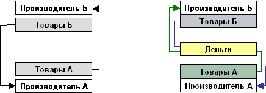
Слева
– схема идеального обмена товарами на рынке без денег.
Справа
– схема обмена товарами через деньги.
В идеальной
системе люди просто обмениваются товарами – результатами своего
труда. Даже если одни из них потребляют больше, чем другие – заслуженно
или не заслуженно – в целом товарообмен продолжает работать, так
как нет накопления капитала, обращение денег не нарушается их
выводом в сундуки или на рынки накопительных товаров.
При
множестве производителей схему товарообмена с использованием денег
можно упрощённо представить следующим образом. Жёлтые стрелки
– это движение денег.
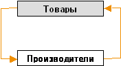
*
* *
В этот момент
появляется перепродавец, хозяин, капиталист, корпорация, который
хочет получать прибыль, то есть узурпировать власть через контроль
товарообмена.
Производители
превращаются в наёмных рабочих, которые подчинены корпорации.
Корпорация становится владельцем средств производства, средств
создания потребительских товаров (товары не обязательно материальны).
Далее на схемах
мы будем обозначать денежную оплату, которую получает рабочая
сила за свой труд, как «зарплату».
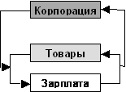
Поскольку корпорация
создаётся с целью получения прибыли, то она изымает деньги с рынка
(стрелка от зарплаты к корпорации). Но эта же корпорация может
инвестировать, добавлять деньги в рынок (стрелка от корпорации
к зарплате), если инвестиции позволяют ей рассчитывать на ещё
большую прибыль в будущем.
Если в целом
в экономике Изъятие = Инвестированию, то круговорот денег и товаров
не прерывается, экономика продолжает работать.
*
* *
Однако проблема
в том, что главная цель корпорации – не только в получении, но
и в накоплении и сохранении прибыли; в накоплении и длительном
сохранении своей власти. Производство интересует корпорацию только
как средство достижения этой цели.
Как мы отмечали
в 6-й главе, в религии денег все товары разделяются на накопительные
и потребительские временные.
Для сохранения
капитала недостаточно изъять с рынка и сохранить временные товары,
которые производятся и потребляются ежедневно. Эти временные товары
обычно недолговечны, скоропортящиеся, они занимают много места
при хранении.
Соответственно,
у перепродавца возникает исключительная нужда в особых накопительных
товарах, которые долго сохраняют свою стоимость относительно временных
товаров и относительно рабочей силы.
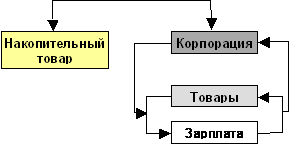
Корпорация использует
накопительные товары как вещественные идолы, хранящие её власть
(капитал). Как мы отмечали в 6-й главе, в простейшем случае накопительный
товар – это золото. Также широко используются недвижимость, драгоценности,
предметы искусства и так далее. Накопительные товары всегда являются
предметами пирамиды; нахождение в пирамиде и обеспечивает рост
их стоимости. Приток денег в эту пирамиду происходит за счёт их
ухода с рынков потребительских товаров.
Если условия
для инвестирования неблагоприятны, то корпорация уводит свои средства
в накопительные товары – складывает золото в сундуки или строит
пирамиды недвижимости и драгоценностей. Естественно, что при этом
наёмные рабочие выбрасываются на улицу, и нередко не имеют средств
к существованию. Наступает кризис.
Когда условия
для инвестирования становятся благоприятными, корпорация достаёт
средства из накопительных товаров (золото из сундуков), и вкладывает
капиталы назад в производство. Наёмные рабочие получают работу,
увеличивается производство. Через некоторое время цикл повторяется.
*
* *
Следующим шагом
становится конкурентная борьба между погаными за вещественных
идолов, за накопительные товары.
В этот момент
происходит интересное превращение. Как мы отмечали в 6-й главе,
поскольку в накопительных товарах их владельца интересует прибыль
– увеличение стоимости, а средства производства также приносят
прибыль, то средства производства приобретают вторичную стоимость
и сами становятся накопительными товарами и предметами пирамиды
(на следующей схеме Корпорация = Средство производства).
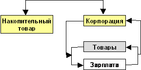
Средства производства начинают
конкурировать в привлекательности с традиционными накопительными
товарами. Если быстрее растёт пирамида средств производства, то
меньше денег уходит в сундуки и в драгоценности, больше возвращается
в производство.
Если же пирамида, например,
недвижимости становится более привлекательной, чем пирамида акций,
то начинается откачивание денег в спекуляции и наступает кризис.
Обратим также внимание на связи
между зарплатой и накопительными товарами, и на связи между зарплатой
и акциями корпорации (синие стрелки на схеме).
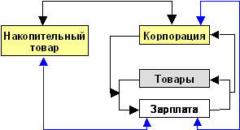
Если зарплата выше уровня жизненно
необходимого, то некоторая её часть может уходить в накопительные
товары (сбережения), или в покупку акций. Если часть зарплаты
уходит в пирамиды накопительных товаров, то это неизменно снижает
спрос на рынке временных товаров, что в принципе может вызвать
снижение производства и общий кризис.
С другой стороны, если деньги,
ушедшие в накопительные товары из зарплаты, будут возвращены на
рынок через изъятие средств из накопительных товаров корпорациями,
то приток уравновесит отток.
Таким образом, если деньги из
зарплаты уходят в акции корпораций, то они как могут вернуться
в зарплату, так и вытечь в накопительные товары.
Может сложиться и ситуация,
когда одновременно будут расти в цене и накопительные товары,
и акции, и зарплаты, а временные товары не будут изменяться в
цене или даже подешевеют. Это происходит, если деньги замыкаются
в суб-контуре «Зарплата – Накопительный товар – Корпорация».
Возникновение той или иной ситуации
зависит от множества факторов и от поведения всех участников товарообмена
и обмена идолами.
*
* *
Итак, в нашей
модели присутствуют четыре типа стоимости:
1)
Постоянные накопительные товары (недвижимость,
золото, драгоценности),
2)
Временные потребительные
товары (еда, товары для быта),
3)
Временный товар рабочая сила (зарплата),
4)
Вторичный товар средства производства временных
(корпорация).
Обобщим отношения к стоимости
товаров с точки зрения участников этого процесса.
Для владельца производства
первичны накопительные товары. Потребительные товары нужны
только для того, чтобы они приносили накопительные товары. Небольшое
(по сравнению с размером капитала) количество временных товаров,
в основном статуса и удовольствия, нужно для собственного потребления.
Рабочая сила нужна как средство производства временных товаров.
Вторичный
товар имеет ценность как приносящий прибыль, но он может становиться
накопительным при условии образования пирамиды или спекуляции
на средства производства.
Для рабочей силы первичны
потребительные товары и наличие работы. Однако если у рабочих
появляются излишние деньги, то они могут вложить их и в накопительные
товары, особенно в свои жилые дома. Тогда они будут заинтересованы
в росте стоимости принадлежащих им накопительных товаров.
Владельцев накопительных
товаров (если у них нет средств производства), интересует рост
стоимости принадлежащих им товаров и низкие цены на товары потребления.
Отметим, что обычно владельцы производства и владельцы накопительных
товаров – одни и те же люди.
Каждый
из участников этого процесса хочет, чтобы стоимость его товара
росла относительно стоимости других товаров. Просуммируем эти
желания:
|
Отношение
к изменению стоимости товара
|
Владелец
производства
|
Владелец
накопительного товара
|
Рабочая
сила
|
|
Накопительного
|
Постоянство
или Рост
|
Рост
|
Постоянство
или Рост
|
|
Временного
|
Снижение
|
Снижение
|
Снижение
|
|
Рабочей
силы
|
Снижение
|
Снижение
|
Рост
|
|
Вторичного
(как оборудование)
|
Снижение
|
Не
имеет значения
|
Не
имеет значения
|
|
Вторичного
(как накопительного)
|
Рост
|
Рост
|
Рост
|
Как видим, желания
участников совпадают в следующем:
§
все хотят снижения цен на временные потребительные
товары,
§
все хотят роста или постоянства стоимости накопительных
товаров,
§
все хотят роста стоимости средств производства,
если они рассматриваются как накопительный товар.
Желания противоречат
в следующем:
§
Владельцы производства и накопительных товаров
хотят снижения стоимости рабочей силы, рабочая сила хочет увеличения
своей стоимости.
Условия возникновение вторичной
стоимости
Для роста производства
необходим рост вторичной стоимости, то есть рост стоимости средств
производства. От чего же зависит размер вторичной стоимости?
Во-первых,
средства производства должны приносить простую прибыль. От самого
производства можно абстрагироваться, и считать, что это обычное
вложение денег, приносящее столько-то процентов годовых. Как мы
отмечали в предыдущей главе, простая прибыль – это первая производная
от стоимости.
Тогда оценку
стоимости средств производства можно выразить как
ожидаемая
прибыль за предстоящие X
лет +
стоимость оборудования минус амортизация оборудования за X
лет
Таким образом,
важно, чтобы ожидаемая прибыль от производства за определённый
период была выше, чем ожидаемая прибыль от роста стоимости накопительных
товаров.
Во-вторых,
как только пирамида акций запущена, важным становится уже не только
рост приносимой производством прибыли, но сам рост биржевой стоимости,
то есть изменение производной от прибыли (вторая производная
от стоимости).
Конечно, вторая
производная зависит от первой производной. Но особенность заключается
в том, что в расчёт берётся не прошлая, но будущая, ожидаемая,
предсказываемая прибыль – вперёд на Х лет. Это и даёт хорошую
почву для спекуляций и строительства пирамид.
При этом очень
важно понимать, что вторичная стоимость возникает только тогда,
когда работает первый контур (товары – рабочая сила). Остановится
движение в первом контуре, падает стоимость вторичного.
Связи во вторичном контуре
Говорим ли мы
о первой, или о второй производной от стоимости, они обе в конечном
итоге зависят от наличия самой стоимости, богатства, которое можно
присвоить.
Если в обществе
есть внешние источники нового богатства, например, золотодобывающая
шахта, то производство как погоня за этим новым богатством может
быть бесконечным.
Но как мы отмечали,
для общества в целом рано или поздно внешние источники богатства
истощаются, и иерархия превращается в замкнутую систему; перераспределение
богатства происходит внутри её.
Давайте подробнее
рассмотрим связи между стоимостями в такой замкнутой системе.
Добавим отдельный блок для денег, выведенных из оборота (казино).
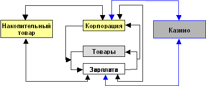
Под рынками «казино» мы понимаем
не только скачки, карточные игры или рулетку, но и спекуляции
на валютных рынках, на всевозможных фьючерсах и опционах.
Главное отличие рынков «казино» от пирамид
накопительных товаров в том, что деньги, вращающиеся на рынках
«казино» просто переходят из рук в руки, не создают новой стоимости
и не меняют соотношения цен на товары. Деньги, участвующие в пирамидах, создают новую
стоимость и меняют соотношения цен.
Связь
между временными товарами и рабочей силой
Поскольку все
деньги в конечном итоге выплачиваются людям (а не вещам или природе),
то для массового производства необходимо, чтобы
стоимость
временных товаров в целом была равна стоимости рабочей
силы
Но в этом случае
не будет прибыли. Прибыль толкает к необходимости выведения денег
из этого контура, к необходимости снижения стоимости рабочей силы.
Включается насос богатства наверх иерархии.
Таким
образом, имеется прямое противоречие – для работы вторичного
контура надо, чтобы деньги полностью сохранялись в первичном
контуре («товар – рабочая сила»). Но целью создания вторичного
контура является отсос денег из первичного контура наверх.
Связь
между вторичной стоимостью и рабочей силой
Вся прибыль
может инвестироваться назад в производство в том случае,
если вторичная стоимость растёт в цене. Прибыль будет возвращаться
для закупки нового оборудования, для найма новых работников, для
повышения зарплаты, то есть будет временно перераспределяется
назад вниз иерархии.
Но как мы помним,
любая стоимость – относительная величина. Чем выше стоимость накопительных
товаров, тем ниже относительная стоимость рабочей силы и переменных
товаров, тем меньше они могут принести относительной накопительной
стоимости. Рано или поздно инвестиции в производство с точки зрения
прибыли теряют смысл.
И если вторичная
стоимость падает в цене, то это вызывает сокращение затрат и уменьшение
стоимости рабочей силы, что опять снижает стоимость средств производства,
вызывает новое сокращение затрат и рабочей силы и так далее по
спирали вниз.
Связь
между накопительной и вторичной стоимостью
Для массового
производства необходимо, чтобы вторичная стоимость росла быстрее,
чем накопительная, иначе все деньги перебегают в спекуляции с
золотом или недвижимостью; и будет расти только производство товаров
роскоши для верхушки.
Обычно рост
стоимости акций сопровождается ростом стоимости накопительных
товаров, так как часть денег владельцы акций вкладывают в дома,
предметы искусства и так далее.
Связь
между накопительной стоимостью и рабочей силой
Если накопительная
стоимость – это массовая стоимость, например, жилых домов, то
для её роста необходим рост стоимости рабочей силы. Поэтому при
общем подъёме наблюдается рост цен на недвижимость и на прочие
товары. Но при спаде возможен крах и цен на недвижимость.
Идеальный
вариант
Как видим, в
этой системе возникает огромное количество возможностей для возникновения
перекосов в денежном обороте.
Поскольку в
целом деньги с низа иерархии движутся вверх, то, чтобы сохранить
круговорот денег, необходимо постоянно убирать деньги с верха
иерархии и подкидывать их в рабочую силу.
Тогда все будут
счастливы – у потребителей будут бесконечные товары и работа,
у владельцев – бесконечное ощущение, что их богатство растёт.
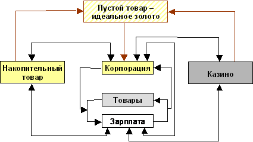
Для этой цели
и появился пустой товар, идеальное золото, о котором мы говорили
выше в этой главе. Перераспределяя с помощью пустого товара выведенные
из оборота деньги, идеальное золото замыкает круговорот и поддерживает
все контуры в работе.
При этом для
сохранения пропорций стоимостей и сохранения системы власти очень
важно, чтобы пустой товар забирал только свободные деньги из казино,
но не из вторичного рынка и не из массовых накопительных товаров.
В противном
случае начнётся выведение денег из производства в спекуляции пустым
товаром, или обвал цен на важные накопительные товары, например,
недвижимость, что вызовет банкротство купивших недвижимость в
кредит, которое вызовет банкротство банков-держателей кредита
и так далее. Если деньги будут изъяты из рынков маловажных накопительных
товаров, например, из рынков картин или драгоценностей, то это
никому не повредит.
Конечно, для
постоянного обеспечения прибыли с каждым разом требуется перераспределять
всё больше и больше денег, поскольку растут объёмы экономики.
Проблемы, которые порождает такой подход, мы рассмотрим ниже.
II.
Положительные обратные связи
Раз мы говорим
о двух контурах, то сразу встаёт вопрос о возникновении положительных
обратных связей между контурами, о коротких замыканиях.
Как мы отмечали
в 1-й главе, положительная обратная связь в технике – это такая
связь, когда увеличение выхода системы увеличивает её вход. Если
возникает короткое замыкание, то оно немедленно забирает на себя
все ресурсы системы и, в конечном итоге, приводит к перегоранию
всей системы или предохранителей. Короткие замыкания возникают
в рыночной экономике постоянно.
Фактически,
любая спекулятивная пирамида – это положительная обратная связь:
чем выше стоимость предметов пирамиды (растёт выход), тем больше
желающих вложить деньги в пирамиду (растёт вход), тем опять быстрее
растёт выход.
Пирамиды в принципе
ограничены только населением планеты и пропорциями пищи. Чем крупнее
пирамида, тем больше людей её обслуживает, тем меньше остаётся
тех, кто обслуживает прислугу пирамиды.
Монополия – это тоже положительная
обратная связь. Чем крупнее корпорация (выход), тем ей легче контролировать
рынок, тем она получает больше прибыли (вход), тем она становится
ещё крупнее (выход).
Замыкания контуров
Несомненно,
что локальное короткое замыкание между первичным (Товары – Рабочая
сила) и вторичным контурами дало бы огромный рост выхода вторичного
контура, то есть рост стоимости акций.
Поскольку в
религии денег игра идёт наперегонки с целью максимизации прибыли,
то такое замыкание дало бы хорошее конкурентное преимущество.
Нам следует
проверить экономику на наличие таких замыканий. Мы увидим, что
в этом и скрыт секрет лидеров рынка акций.
*
* *
Первое, самое
распространённое замыкание – это вкладывание прибыли корпорации
напрямую в скупку своих собственных акций (так называемый buy-back).
Если мы вспомним, для чего
изначально якобы выпускаются акции, так это для развития производства.
Но поскольку настоящей целью является получение прибыли, то экономически
выгоднее сделать наоборот. Такой самоскупкой занимаются практически
все крупные корпорации США.
Что делать,
если прибыли нет? Взять деньги в долг, и на эти деньги прикупить
собственных акций. Этим тоже занято огромное число фирм.
*
* *
Далее, можно
вкладывать зарплаты сотрудников фирмы в акции этой самой фирмы.
Выполняется это двумя способами – выдачей части зарплаты в виде
опционов акций (stock
options), или
продажей сотрудникам собственных акций со скидкой. Нередко оба
способа применяются одновременно.
Здесь спрятан
дополнительный плюс – если зарплата в бухгалтерской книге считается
расходом (и уменьшает прибыль), то опционы акций расходами не
считаются.
Далее, можно вкладывать свои
пенсионные фонды в собственные акции. Крупные фирмы имеют корпоративные пенсионные фонды,
которые выплачивают бывшим сотрудникам дополнительную (к минимальной
государственной) пенсию. В пенсионный фонд ежегодно отчисляется
некоторый процент, например 5процентов, сверх оклада сотрудника.
Этим фондом управляет корпорация, и он относится к её активам,
к её собственности.
Рост стоимости
пенсионных фондов согласно правилам бухгалтерского учёта является
прибылью фирмы. Известно, что ИБМ таким совершенно легальным образом
увеличивала свою прибыль на 9 процентов в год, а от этого увеличения
прибыли её акции выросли ещё сильнее. Передовой опыт ИБМ переняли
и многие другие крупные фирмы, с помощью бизнес-консультатнов
вроде PriceWaterHouse
Coopers или Артур
Андерсен (Arthur
Andersen).
Фактически происходит идеальное
замыкание – акции владеют сами собой, и поскольку их стоимость
растёт, то... их стоимость растёт ещё больше.
*
* *
Эффективно и
обратное замыкание – выплата зарплаты высшим менеджерам корпорации
в виде её акций. Не только денежная зарплата у президента фирмы
во много раз выше денежной зарплаты работника, но и количество
выделяемых президенту опционов акций в тысячи раз превышает количество
выделенного рядовому работнику.
Если в среднем
соотношение дохода рабочего и президента до интернет-бума в США
составляло 1 : 141 (в 1995 году), то в разгар бума – уже 1 : 475
(в 1999 году).
*
* *
Если прибыли
нет, в долг уже не дают, и сотрудников очень мало (например, в
индустрии телекоммуникаций в 2000-2001 годах)?
Фирмы перепродают
товары друг другу, этим увеличивая свой «оборот». Деньги даже
не покидают банковского счёта, а товары – складов. Просто один
провайдер сдаёт в аренду свою линию другому провайдеру, а тот
делает обратную аренду. В счётной книге обороты растут.
Можно продавать
товары и самому себе, как это делала до конца 2001 года вторая
по размеру американская корпорация Энрон. В 1997 году прибыль
Энрона была порядка 100 миллионов долларов в год. В 2000 году
прибыль выросла до 1 миллиарда, что раздуло его рыночную стоимость
до 67 миллиардов долларов.
Коммерческий секрет Энрона
в следующем. Он основал около 900 оффшорных дочерних структур, которые покупали у него и продавали ему же «энергию».
Это были фьючерсы на энергию, то есть право поставки энергии в
будущем, через десять, а иногда и через пятьдесят лет. Энрон давал
оффшорам (то есть самому себе) деньги в «долг», оффшоры платили
их назад Энрону, Энрон записывал полученные от самого себя деньги
как прибыль, а затем он покрывал возникшие убытки оффшоров (то
есть самого себя) своими акциями.
Вероятно, менеджеры
Энрона хорошо ознакомились с опытом 1720 года, поскольку они ещё
и активно жертвовали в избирательные фонды Буша и половины конгрессменов,
а также очень хорошо платили своему аудитору с мировым именем,
фирме Артур Андерсен.
Роль бизнес-консультанта
состоит в том, чтобы помочь фирме уклониться от налогов и раздуть
(легальными методами) свой бизнес. Роль аудитора в том, чтобы
защищать акционеров, проверять отчётность фирмы и следить за тем,
чтобы она правильно платила налоги и не раздувала бизнес. Сюрприз
– оказывается, бизнес-консультант и аудитор Энрона
– это одно и то же лицо. Ещё одна положительная обратная
связь.
Поскольку в
мире есть всего четыре крупные фирмы, специализирующихся на консультировании,
и те же четыре крупные фирмы специализируются на аудите, то этот
сюрприз ожидает нас практически во всех компаниях, акции которых
котируются на бирже.
Зарплату и премии
своим сотрудникам Энрон, естественно, тоже платил своими акциями,
и держал пенсионные фонды сотрудников в своих же акциях.
Для поддержания
такой пирамиды требовались постоянно возрастающие в объёмах внешние
заимствования. Как только банки перестали давать в долг, Энрон
обанкротился, разорив кредиторов примерно на 30 миллиардов долларов
и оставив своих сотрудников нищими. Владельцы его акций потеряли,
соответственно, 67 миллиардов долларов.
*
* *
Помимо своих
сотрудников, в акции можно замкнуть деньги своих потребителей.
Самый простой способ – разрекламировать правило: инвестируй в
акции фирм, товары которых ты покупаешь. По этому принципу действуют
наиболее известные «брэнды». Это всё равно что продавать колу
с наценкой. Ящик колы плюс акция его производителя.
Можно развить
эту идею и предложить «скидку в акциях» (stock
rebate). Многие фирмы предлагают
скидки по почте. Например, покупатель платит в магазине 100 долларов
за принтер, отправляет на фирму купон, и фирма ему присылает чек
на 20 долларов. Смысл в том, что такая схема раздувает объёмы
продаж, а купоны списываются на маркетинговые расходы.
Можно было бы
присылать такую скидку не в деньгах, а в акциях фирмы. Тогда товар
можно было бы вообще отдавать бесплатно – заплатил 100 долларов,
получил и принтер, и акцию производителя стоимостью 100 долларов.
Можно было бы установить ограничение на продажу такой акции, скажем
мораторий на 1 год. Как минимум в течение года все были бы счастливы,
а если бы нашлись большие дураки, которые купили бы эти
акции, то и дольше года.
Кажется невероятным?
Но на самом деле в 1990-х именно так и поступали многочисленные
интернет-компании, только не в розничной торговле, а в поставках
между фирмами. Они закупали оборудование, расплачиваясь своими
акциями, которые росли в цене, ибо при такой «оплате» расходов-то
у интернет-компаний не было. В счётной книге было хорошо и поставщику,
и потребителю. Не вспоминаются ли нам цирюльники 1817 года?
Ну и наконец, налоги тоже можно
замкнуть в акции. Налоги, собранные в государственные пенсионные
фонды тоже надо постоянно вкладывать в какие-то предметы накопления,
в какие-то идолы. Если нельзя напрямую в акции, то можно дать
деньги под процент фирме, которая их вложит в свои акции.
Неустойчивость и отрыв от товара
Естественно, что чем выше производная
от некоторой величины, тем сильнее её неустойчивость. Если мы
возьмём линейную зависимость, то приращению по одной оси будет
соответствовать линейное приращение по другой. Во второй производной
наступает квадратичная зависимость, в третьей – уже кубическая.
Два в третьей степени уже восемь. Малейшее изменение на входе
может вызвать огромное колебание на выходе.
На основе какой производной
принимаются решения в рыночной экономике? Давайте посчитаем.
Мы уже не говорим о том, что
для человека в товаре важна вообще-то не стоимость, а его функциональные
характеристики, ибо экономика оперирует только стоимостью.
Изменение стоимости – прибыль
– это первая производная. Вторая производная – стоимость акций
производителей. Но инвестор выбирает акции не по стоимости акций,
а по изменению их стоимости, по росту акций. Это третья производная.
В силу конкуренции между разными акциями инвестор выбирает акции
даже не по их абсолютному росту, а по изменению скорости роста
относительно скорости роста других акций. Это четвёртая производная.
Но массовые инвесторы обычно
вкладывают деньги в акции не напрямую, а через паевые фонды. Паевой
фонд смотрит на четвёртую производную, а вкладчик фонда – на пятую,
на рост стоимости этого паевого фонда. Опять-таки, в силу конкуренции
между фондами выигрывает тот фонд, чья скорость роста стоимости
(процент роста за год) выше, чем у других. Это шестая производная.
Это если не учитывать, что многие
вкладывают в инвестиционные портфели, которые являются
своеобразными паевыми фондами для паевых фондов. Тогда это – седьмая,
а конкуренция между портфелями – восьмая производная.
Добавьте сюда, что многие фонды
и инвестируют не в акции, а в разного рода дериваты – фьючерсы,
опционы и так далее, которые уже являются производной.
И наконец, представьте, что
при принятии главных инвестиционных решений эта шестая или девятая
производная берётся не от текущей цены, а от предполагаемой будущей
цены.
И рыночная экономика
пытается нас убедить, что владельцы капитала заняты улучшением
качества товаров?
*
* *
Что такое успешное управление
капиталом или богатством сегодня? Разные пирамиды растут с разной
скоростью. Для успеха надо находить наиболее быстро растущие пирамиды,
вовремя вкладывать в них капитал, и вовремя его выводить.
В этой системе
производство имеет смысл постольку поскольку оно помогает росту
пирамиды. И то только в том случае, если предметом пирамиды являются
средства производства физических товаров. А если это средства
производства брэндов, то есть символов?
По мере достижения
материального изобилия и повышения степени идеализации общества,
всё чаще происходит не обмен товарами, не обмен акциями, но обмен
чистыми символами. Обмен в попытке выгадать, какой из этих символов
будет стоить дороже в будущем.
По каким законам
меняются значения символов в сознании людей? Конечно, не по законам
физики или механики, и не по законам материализма. Мы обсудим
эти законы в 9-й главе.
III.
Некоторые признаки больших спекуляций
Давайте
посмотрим на некоторые наиболее очевидные признаки того, что на
бирже акций возникла большая спекуляция.
При
спекуляции одновременно растут:
–
стоимость отдельных акций,
–
количество компаний, котирующихся на бирже,
–
ежедневные объёмы торгов всеми акциями.
Этот рост требует,
чтобы на обслуживание пирамид отвлекались очень значительные потоки
денег (ослы). Если они слишком резко покинут рынки потребительских
товаров, то это может привести к падению цен на этих рынках и,
соответственно, к падению производства. Поэтому во время бума
так важны долговые пирамиды и подпечатка новых денег.
Естественно,
что когда пирамида падает, в обороте резко оказывается огромное
количество свободных денег, которые раньше занимались обслуживанием
пирамиды. Большой вопрос в том, куда пойдут эти деньги.
Деньги в пирамиде,
постоянно путешествуют между банковскими счетами участников-спекулянтов.
Если количество денег в пирамиде уменьшится, то или цены должны
опуститься, или должны сократиться объёмы торгов. Поскольку на
рынок постоянно выпускаются всё новые и новые акции (благо желающих
заработать на спекуляции всё больше), то уменьшение количества
денег практически всегда грозит обвалом.
Если говорят,
что за день торгов стоимость всего рынка увеличилась, например,
на 10 миллиардов долларов, это, конечно, не значит, что на рынок
пришли 10 миллиардов новых денег. В торгах могло участвовать,
например, всего 5 процентов от существующих акций. Эти 5 процентов
выросли в цене на десять процентов. Соответственно, в счётных
книгах и оставшиеся 95 процентов выросли на десять процентов.
*
* *
Другим признаком
является превышение количества перепродавцов над количеством самих
товаров.
Например, паевых
фондов, которые вкладывают в компании, котирующиеся на бирже,
становится больше, чем самих компаний. Конечно, акции паевых фондов
тоже начинают котироваться на бирже, что ещё сильнее раздувает
пирамиду. Пока идёт подъём, магически растут и те и другие. В
случае обвала они сдуваются тоже магически.
*
* *
Следующий признак
спекуляции – резкое возрастание количества людей, занятых обслуживанием
пирамиды. При обвале все эти люди мгновенно оказываются без работы.
Среди служителей
культа особое место занимают всевозможные гуру и аналитики. Поскольку
среднему человеку сложно разобраться во всех тонкостях рынка,
то инвестиционные банки и финансовые фирмы содержат специальный
штат аналитиков, следящих за акциями на бирже, и публикующих советы
для инвесторов. Советы обычно сводятся к рекомендациям: «купить»,
«продать» или нейтральной «держать». Во времена бума мудрые аналитики
советуют только покупать, и покупать все акции (в 1998 году на
одну рекомендацию «продать» было 72 рекомендации «купить»).
«Учёными» в
бизнес-школах и в университетах придумываются всё новые «модели
оценки стоимости» (valuation)
компаний, поскольку надо не только как-то оправдать уже завышенную
цену, но ещё и доказать, что она будет расти.
Когда-то главным
показателем для стоимости акций была прибыль компании. Считалось,
что стоимость акций должна окупаться прибылью за 7-12 лет (так
называемый PE
ratio). Когда
во время бума средний показатель окупаемости достигает 50-75 лет,
а у некоторых компаний – 600 лет, то, действительно, надо придумать
какие-то новые модели. Например, придумать доказательства того,
что Интернет-торговля полностью выведет из бизнеса обычные магазины.
Тогда уже можно подсчитывать не тот убыток, который реально получает
Интернет-сайт, а ту прибыль, которую он может получить, когда
вымрут его не-Интернет конкуренты.
Появляется немало
гуру, которые рекламируют свои правила успешного инвестирования,
якобы полученные на основе сложного и долгого анализа. Конечно,
чем больше людей применяет эти правила, то есть покупает выбранные
гуру акции, тем выше растут в цене именно эти акции, тем больше
уверенности в ясновидящих способностях этого гуру.
Сам гуру в абсолютном
выигрыше – ведь он уже не просчитывает поведение большего дурака,
а задаёт это поведение.
*
* *
Ещё один признак
спекуляции – появление огромного количества теорий о том, какие
факторы влияют на котировки в пирамиде.
Многие из этих
теорий носят фантастический и гротескный характер. Например, теория
о том, как количество шипящих букв в названии корпорации влияет
на стоимость её акций. С другой стороны, как и в случае с гуру,
если все согласятся, что будут расти акции на букву «X»,
и начнут скупать эти акции, то акции на букву «X»
действительно будут расти, что подтвердит теорию.
Отсюда во время
спекуляций корпорации начинают срочно менять свои названия на
модные. Практически любая компания в конце 1990-х обязана была
иметь в названии сочетание «.com».
Эта приставка автоматически добавляла к её стоимости несколько
десятков или сотен миллионов долларов.
Замечательным
примером является компания funerals.com
(похороны.com),
которая занималась организацией через Интернет похорон.
Их девиз – «Мы
вернём веселье в
похороны» (We are going
to put the fun back into funerals).
*
* *
Один из признаков
большой пирамиды – необычайно широкий интерес к узкотехническим
компаниям деятелей поп-культуры, кино, музыки и прочих знаменитостей,
которые неожиданно оказываются в числе основателей этих компаний.
Это происходит
вследствие того, что для привлечения к себе внимания, новые компании
заранее раздают свои акции киноактёрам и поп-дивам. После этого
во всех новостях объявляется, что на бирже начинаются торги акциями
компании, которой владеет знаменитый поп-идол. Естественно, что
знаменитости получают акции в подарок или с очень большой скидкой.
Вечное процветание
Во времена эйфории теория большего
дурака начинает работать в счёте на минуты. Появляется широкая
прослойка дэй-трейдеров, то есть людей, которые покупают и продают
акции в течение нескольких часов или минут. Их кредо в том, чтобы
просто бежать на шаг впереди толпы. Они смотрят телевизор или
читают утренние газеты, и немедленно покупают акции той корпорации,
которая была просто упомянута в положительном свете в новостях. Расчёт делается на то, что в течение дня на эти
новости среагирует масса, и акции подрастут.
Абсолютным чемпионом
в категории большего дурака во время последнего бума стала компания
Priceline.com.
Её бизнес-модель состояла в следующем. Priceline
через свой Интернет-сайт предлагала билеты на авиарейсы разных
авиакомпаний. При этом посетитель веб-сайта сам мог назначить
цену на авиабилеты, например, сказать, что он готов заплатить
90 долларов за перелёт из Нью-Йорка в Майами. Сайт подбирал ему
какой-нибудь вариант, обычно не очень удобный, с пересадками,
но за названную цену.
У авиакомпаний
всегда остаётся какое-то количество непроданных мест, поэтому
они сбрасывали эти худшие места в Priceline
по дешёвой, но не очень дешёвой цене, чтобы не повредить своим
основным продажам билетов. Priceline
даже приплачивала за эти билеты, чтобы запустить свой бизнес,
то есть она продавала товар дешевле, чем покупала.
Какова же была
рыночная стоимость Priceline.com?
Она была больше, чем рыночная стоимость трёх крупнейших авиакомпаний
США вместе взятых. К чести Priceline,
после коллапса рынка она не разорилась. Правда, упала в цене –
примерно в 150 раз.
В целом в результате
биржевых крахов акции тех компаний, которые не разоряются, падают
в цене вдвое, а при сильных депрессиях, как Великая депрессия
– в 5.5 раза (с учётом дефляции, номинально – в 9 раз). С 2000-го
года по 2003-й технологические акции упали в цене в 4.5 раза,
а количество разорившихся крупных Интернет-компаний подошло к
тысяче.
*
* *
Что будет следующей
большой игрой на бирже? Видимо, акции борделей. В Австралии в
2003 году на биржу вышел первый «шестизвёздочный» бордель. За
первый день торгов его акции поднялись в цене в 2.2 раза. Он планирует
инвестировать собранный капитал в создание «секс-диснейленда».
Это рынок с бесконечными и явно недооцененными возможностями.
Что станет заменой
пирамиды недвижимости? Наверное, спекуляции местами на кладбищах.
Кладбищ в престижных местах мало, отмирание стареющего населения
Орды предстоит массовое. Уже можно начинать торги за могилы в
местах, наиболее соответствующих статусу и состоянию.
Комбинированные спекуляции
Как мы отмечали,
для массового производства просто необходимо массовое перераспределение
капитала. После окончания первоначального дележа богатства такое
массовое перераспределение возможно или через спекулятивные пузыри,
или через войну.
Как мы увидели,
весь XIX век в
истории США был сплошной последовательностью спекуляций, обвалов
и депрессий. В Европе шли примерно те процессы, но не в столь
чистом виде, поскольку они проходили на фоне войн и революций.
Мы также увидели,
что наибольший эффект имеют комбинированные пирамиды акций, долга
и недвижимости. Давайте посмотрим, как обстояли дела в XX
веке.
*
* *
За депрессией
1907 года последовал взлёт производства, работавшего на Первую
мировую войну. После войны прошёл закономерный спад, который сменился
веком процветания и огромной спекуляцией 1920-х годов. Она закончилась
полным крахом в 1929 году и Великой депрессией, из которой США
вышли только благодаря Второй мировой войне. Ниже мы рассмотрим
Великую депрессию подробно.
Тридцать лет американцы с ужасом
относились к Уолл-Стрит. Но к концу 1950-х годов сменились поколения,
память ослабла, и в 1960-е раздулся очередной биржевой и долговой
пузырь, который громко лопнул, закончившись девальвацией доллара
и отменой золотого стандарта в 1971 году.
В 1970-е прошли
в глубокой рецессии, при сильной инфляции и массовой безработице.
Спекуляции велись на золоте и серебре, которые прыгали в цене
в пять-десять раз. Как мы знаем, спекуляции на накопительных товарах
мало стимулируют производство.
В 1980-е годы,
с приходом к власти Р.Рейгана и М.Тэтчер, были отменены многие
регуляторы, введённые после Великой депрессии. Началась строительство
крупных пирамид акций, долга и недвижимости.
Пирамида акций
лопнула осенью 1987 года. Следом за ней к 1989 году закончилась
банкротством пирамида долгов сберегательных союзов (Savings
and
Loans). Эти союзы брали взаймы
для того, чтобы купить корпорации, разделить их на части, а потом
продать части по одиночке дороже, чем они были куплены оптом. Чтобы предотвратить массовые банкротства миллионов
американцев, для чистки сберегательных союзов пришлось истратить
не менее 200 миллиардов долларов из налогов.
Эти обвалы привели
к рецессии начала 1990-х, которая закончилась, когда начался рост
пузыря технологических и Интернет-акций. По размерам и массовости
эта спекуляция сопоставима только с бумом 1920-х годов. Интернет-пузырь
лопнул весной 2000 года.
Обратите внимание на размеры
активов, которые компании просто списали в результате этого обвала.
Например, AOL Time Warner списала порядка 100 миллиардов долларов,
WorldCom – 80 миллиардов долларов. Естественно, что не было ни
пожара, ни наводнения, которые бы вдруг уничтожили имущество этих
компаний. Просто компании сначала думали, что у них есть эта собственность,
а теперь они думают, что её нет.
В начале 2001
года жрецам религии денег удалось быстро запустить пирамиду недвижимости
и ускорить пирамиду государственного долга. Одновременно увеличилась
реальная зарплата американцев за счёт резкого снижения выплат
по ипотеке. Эти меры несколько сгладили эффект спада в экономике.
Но к началу
2003 года пирамида недвижимости стала явно выдыхаться, а акции
компаний так и не росли в цене. Как и в 1930-е, выходом стала
война.
История Великой депрессии
Великая
депрессия в 1930-е годы охватила весь мир (за исключением СССР),
и стала непосредственной причиной Второй мировой войны. На сегодняшний
день она является самым сильным кризисом религии денег. В нём
очень хорошо отразились все те закономерности, о которых мы говорили
выше.
Цветущие 1920-е
В
1920-е годы экономика США переживала подъём. Она сравнительно
легко пережила спад, наступивший в 1919 году после того, как иссякли
военные заказы.
Локомотивом роста стала автомобильная промышленность.
Производство автомобилей с 1.9 миллиона штук в 1919 году возросло
до 4.3 миллиона в 1926-м и до 5.6 миллиона в 1929 году. За автомобилями следовала и остальная промышленность.
Индекс общего производства вырос с 67 единиц в 1921 году, до 100
в 1923-25 годах и до 126 в 1929 году.
До 1925-го года в основе роста
лежали долговые пирамиды, которые носили довольно умеренный характер.
Это были доступный лизинг автомобилей для населения Америки и
большие кредитования восстанавливавшейся после войны Европы. Главным
получателем американских денег была Германия, которая выплачивала
военные репарации Англии и Франции. Американские займы были для
Германии единственной возможностью справиться с огромными репарационными
платежами.
Под высокий процент Германия
получала американские деньги, переводила их в Англию и Францию,
а те, в свою очередь, расплачивались с США по долгам, сделанным
во время войны. Таким образом, с одной стороны, как и в любой
хорошей пирамиде деньги просто совершали круговорот, с другой
стороны – происходило постоянное движение капитала, которое обеспечивало
спрос на продукцию американской промышленности.
Следующий толчок перераспределению
капитала и росту экономики дала спекуляция недвижимостью во Флориде,
организованная в 1925 году знаменитым Чарльзом Понзи. Участки
флоридской земли выкупались у фермеров, разбивались на очень маленькие
лоты и продавались по новой высокой цене, но всего за 10 процентов
наличными, остальное – в кредит.
По всей стране развернулась
маркетинговая компания, рекламировавшая Флориду как новую Американскую
Ривьеру. Земля быстро росла в цене. Стоимость лота удваивалась,
утраивалась и учетверялась в течение нескольких месяцев. Начался
строительный бум. Железные дороги перестали справляться с перевозками
стройматериалов. 90 процентов покупателей земли не собирались
жить во Флориде, им просто хотелось легко разбогатеть на перепродаже.
Конец этому благополучию положил
ураган, прошедший во Флориде 18 сентября 1926 года. Погибло около
четырёхсот человек, а десятки красивых яхт были выброшены на улицы
Майами. Флорида вдруг перестала быть привлекательной, и большинство
спекулянтов разорилось.
Но почувствовав вкус лёгких
денег, американцы не собирались останавливаться.
Биржевой бум
В 1927 году индексы акций на
бирже начали стабильно расти. Ситуация улучшалась тем, что были
снижены проценты по кредитам. Свободные деньги в больших объёмах
начали стекаться на биржи.
Весной 1928 года количество
акций, участвовавших в торгах, увеличивалось на 20-25 процентов
в месяц. Стоимость акций росла на глазах. Стремясь заработать,
банки и страховые компании начали активно вкладывать свои деньги
и деньги, вверенные им клиентами для хранения, в биржевой рынок.
Сотнями возникали инвестиционные трасты, прообраз нынешних паевых
фондов.
За 1928 год рост стоимости акций
составил в среднем 35 процентов. Отдельные корпорации выросли
в цене в 3-4 раза. Американцы не сомневались, что наступила эра
всеобщего процветания и бесконечного благоденствия.
Множество частных спекулянтов
покупали акции в долг. Те банки, которые непосредственно не вкладывали
в акции, наживались на кредитовании спекулянтов. Пока акции росли
в цене быстрее, чем росли долги, отдавать кредиты было легко.
Следует помнить, что в те годы жёстко соблюдался золотой стандарт,
и каждому доллару, вложенному в биржу, соответствовало золото
в хранилище банка.
Спрос на кредит настолько возрос,
что его стоимость прыгнула с 5 до 12 процентов годовых. Это вызвало
поднятие ставок по всему миру.
Весна и лето 1929 года стали
пиком эйфории. Стоимость акций росла на 10 процентов за один месяц;
стоимость отдельных корпораций выросла за лето в полтора-два раза.
Помимо Нью-Йорка, биржи возникли в других городах Америки; информацию
о котировках они получали в реальном времени по телеграфу.
Деньги потекли в Америку со
всего мира. Размеры кредитов, выдаваемых брокерам, росли ежедневно.
В июне начался спад промышленного производства, вызванный тем,
что все деньги уходили на биржу.
Обвал
Падение биржи началось 24 октября 1929 года.
К 29 октября акции стали сбрасывать панически. За один день было
потеряно всё «богатство», которое было «создано» за год. Тут же
началась массовая продажа акций, купленных в долг, чтобы покрыть
возникшие дефициты. Это вызвало ещё более сильное падение цен.
К середине ноября акции в целом
упали в цене в 2 раза по сравнению с сентябрём. К весне 1930 начался
некоторый подъём, который сменился новым спадом. Акции продолжали
падать до 1932 года, когда их стоимость составила 11 процентов
от пика.
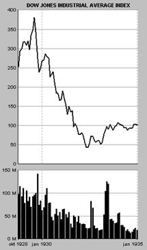
Индекс
Доу-Джонса в 1928 – 1935 годах. В нижней части графика –
объёмы торгов в миллионах штук акций.
Сброс акций по пониженным ценам
не мог покрыть убытком по долгам. Началось массовое разорение
банков. Прошло три волны банкротств – в 1930, 1931 и 1933 годах,
в результате которых закрылось более 9 000 банков, от чего пострадали
уже не спекулянты, а обычные вкладчики.
Банкротство банков вызвало резкое
сокращение количества денег, которые находились в обороте. Цены
на товары пошли вниз. Тут же начало сокращаться производство,
падать импорт и экспорт. Дефляция составила 40 процентов, а по
некоторым товарам – до 60-70 процентов.
Американские банки, испугавшись
дальнейших банкротств, остановили выдачу кредитов Германии. Это
усугубило внутреннюю ситуацию с производством в Америке, поскольку
убрало платёжеспособный спрос на американские товары в Европе.
Одновременно прекращение американских
кредитов парализовало торговлю и производство внутри Европы, поскольку
Германия была не в состоянии выплачивать репарации самостоятельно.
В 1931 году начали разоряться немецкие и австрийские банки. Возникла
паника в Германии, которая привела к новым банкротствам. В июле
1931 года были временно закрыты все немецкие банки.
В сентябре 1931 года из золотого
стандарта вышла Великобритания, что вызвало панику по всему миру
и массовый обмен долларов на золото, что ещё сильнее сократило
количество денег в обращении.
Стремясь стимулировать внутреннее
производство, все страны Европы и США начали вводить высокие пошлины
на импортные товары. В результате экспорт в целом стал невыгоден,
производство снизилось ещё сильнее.
За два года депрессия охватила
все страны мира, кроме СССР.
Первые годы депрессии
Биржевая лихорадка продолжалась
всего два года, но последствия обвала были катастрофическими.
К 1932 году производство в США упало почти в 2 раза по сравнению
с 1929 годом.
Заметим, что войны не было,
никто не атаковал США, никто не препятствовал их торговле, не
возникало никаких проблем и с поставками сырья.
Депрессия была чисто религиозным
кризисом. При дефляции, когда товары дешевеют с каждым днём, нет
никакого смысла покупать или производить сегодня то, что завтра
будет дешевле. Снижение цен на товары означало относительное повышение
цены золота. Богатые становились богаче, просто сидя на своём
сундуке.
К концу 1920-х годов концентрация
капитала в США достигла сильнейших пропорций. Между 1923 и 1929
годом производительность труда в промышленности выросла на 32
процента, а заработная плата – всего на 8 процентов. Зато прибыли
корпораций выросли на 62 процента.
В 1929 году двести крупнейших
корпораций США контролировали половину всей промышленности. У
80 процентов семей американцев вообще не было сбережений, а верхние
2.3 процента иерархии владели 66 процентами сбережений. Самые
верхние 0.1 процента, или всего 24 000 семей, владели 34 процентами
всех сбережений.
Естественно, что для 2.3 процента
населения, у которых сосредоточилось всё золото, нет необходимости
разворачивать массовое производство.
В конце 1920-х годов порядка
60-80 процентов дорогих покупок, таких как автомобиль или радиоприёмник,
осуществлялось рабочими в долг. При разраставшейся безработице
кредитование прекратилось.
Обнищание в городах привело
к падению спроса на сельскохозяйственную продукцию и к снижению
цен на неё. Это вызвало массовое разорение фермеров, которые не
смогли делать выплаты по кредитам, полученным на покупку земли,
тракторов и прочего оборудования. Что, в свою очередь, вызвало
дальнейшее банкротство банков, поскольку заложенные в них фермы
тоже обесценились.
По сравнению с 1929 годом, к
1933 году инвестиции в производство в США упали в 50 раз, а официальная
безработица поднялась с 3.2 до 25 процентов.
Попытки борьбы с депрессией
Недовольство нищавшего населения
стало представлять реальную угрозу. Ни пособий по безработице,
ни системы иных социальных выплат, в США не существовало.
Правительство консервативного президента Гувера
создало несколько комиссий для оказания «помощи» безработным.
Их главной задачей было... поднять настроение массы. Эти комитеты,
обычно возглавляемые крупными капиталистами, нанимали актёров,
давали рекламу в газеты, пытаясь вселить в безработных оптимизм
и улучшить их психологическое самочувствие. Любые же идеи о государственной помощи отвергались
как вредные.
Обстановка накалялась, требовались
немедленные действия, чтобы предотвратить дальнейшее падение производства
и возможный бунт голодного населения. На выборах 1932 года под
лозунгом «Нового соглашения» (New
Deal) президентом
стал Франклин Делано Рузвельт.
Одними из первых действий Рузвельта
стали попытки остановить падение цен на продукты сельского хозяйства.
Действуя в чисто рыночном стиле, для стабилизации цен было решено
уменьшить предложение товара и ограничить производство.
В голодной Америке уничтожили 6 миллионов голов свиней и 200 тысяч
свиноматок, а так же запахали 10 миллионов акров хлопковых плантаций.
Что не сделаешь, чтобы ублажить идола!
Следующий шаг был более практичным.
Срочно созданная Администрация по гражданским работам (CWA)
наняла на временную работу около 4 миллионов безработных, чтобы
дать им возможность как-то пережить зиму 1933-34 годов. Эта администрация
имела такой успех, что весной 1934 года её немедленно закрыли,
чтобы не создавать у людей представления, что правительство будет
обеспечивать их работой.
Параллельно была создана Администрация
по общественным работам (PWA),
которая нанимала безработных для строительства государственных
мостов, дорог, школ, портов и госпиталей. Это агентство стало
одним из главных источников помощи во время депрессии.
Национальная администрация восстановления
(NRA) занималась
поддержкой профсоюзов и стала посредником при заключении коллективных
соглашений о зарплате. Были приняты законы об установлении минимальной
заработной платы, которой бы реально хватало на жизнь. Рабочую
неделю ограничили 40 часами.
Была создана корпорация, которая
обеспечивала льготные кредиты для владельцев домов. Это позволило
предотвратить банкротства средних американцев.
Для ограничения новых биржевых
пузырей в будущем, законом 1934 года была создана постоянная Комиссия
по ценным бумагам (SEC). Комиссия
получила большие права по надзору за биржей. Она ввела стандарты
по корпоративной отчётности и ограничила «инсайдерскую» торговлю
акциями (ситуации, когда менеджер или крупный акционер использует
служебную информацию для получения прибыли в ущерб мелким акционерам).
Были также приняты акты, запрещавшие сберегательным банкам и страховым
компаниям напрямую спекулировать на бирже.
Продолжение депрессии
Несмотря на эти меры, депрессия
не прекращалась. Что было естественно – серьёзного перераспределения
капитала с верху иерархии в низ не происходило.
Миллионы людей жили в лачугах,
собранных из фанерных ящиков, каждый день пускаясь в поиски краткосрочного
заработка и в буквальном смысле в поиски куска хлеба. Сотни тысяч
беспризорников скитались по стране, путешествуя в товарных вагонах.
Реальную жизнь тех лет можно увидеть в американских фильмах 1930-х
годов, например, «Our
daily
bread» и «The
grapes
of
Wrath».
К 1935 году в США стали набирать
силу социалистические и коммунистические идеи. Практика наглядно
подтверждала выводы Маркса о наступлении всеобщего и последнего
кризиса капитализма. Выборы губернатора Калифорнии едва не выиграл
социалист Аптон Синклер.
Приближались очередные выборы
президента, что подвигло Рузвельта на новые реформы («Second
New
Deal»). Через
администрацию WPA
были выделены новые средства на общественные работы. Была создана
система социального страхования, система государственных пенсий
и пособий по безработице. В 1935 году были слегка увеличены налоги
на лиц с высоким доходом.
Даже эти меры вызвали обвинения
Рузвельта в попытках «советизировать» Америку и слишком раздуть
роль государства. Многие его инициативы были запрещены Верховным
судом США.
К 1937 году начал оживать биржевой
рынок, и вместе с ним – промышленное производство. Но этот временный
подъём быстро завершился глубоким спадом 1938 года. Неизвестно,
сколько бы продолжалась депрессия, если бы не Вторая мировая война
в Европе. Ещё более безнадёжная, чем в США, ситуация в Германии
привела к власти Гитлера.
Немецкие промышленники начали
активное кредитование военного производства под залог богатства,
которое будет награблено в будущей войне. В 1939 году Гитлер начал
отдавать эти кредиты. Военные заказы из Европы, за которые европейцы
расплачивались столь дорогим для американцев золотом, мгновенно
оживили производство в США, и к 1940-41 году безработица сошла
на нет.
*
* *
Единственной
страной, которая не поклонялась в те годы идолу, был Советский
Союз. Сравним изменение промышленного производства в США и СССР
в 1920-30-е годы (1929 год взят за 100, данные Лиги Наций 1937
года):
|
|
1927
|
1928
|
1929
|
1930
|
1931
|
1932
|
1933
|
1934
|
1935
|
|
США
|
89
|
93
|
100
|
81
|
68
|
54
|
64
|
66
|
76
|
|
СССР
|
64
|
80
|
100
|
131
|
161
|
183
|
198
|
238
|
293
|
Последствия борьбы с кризисами
Пытаясь остановить стремительно
распространявшийся после Второй мировой войны социализм, религия
денег была вынуждена активно применять теорию Кейнса и идеальное
золото для регулярного временного перераспределения капитала вниз
иерархии. В этом разделе мы рассмотрим, к чему привели эти методы.
Утрата устойчивости
Поскольку всё равно капитал
постоянно возвращается наверх иерархии, то неравенство с каждым
витком и с каждым годом продолжает усиливаться. Наверху иерархии
скапливается огромное количество ничем не связанных денег, которые
представляют всё большую угрозу для стабильности системы в целом.
В моменты очередного пирамидостроительства
эти деньги заняты, но во время пауз они уходят в казино. После
окончательной отвязки от золотого стандарта в 1971 году, деньги
приобрели особую подвижность. В 1980-е годы перевод банковских
операций в реальное время с помощью компьютеров резко сократил
период обращения денег.
Любимой рулеткой для богатых
в последние двадцать лет стали международные валютные рынки. В
отличие от казино в Монте-Карло, это валютное казино весьма существенно
влияет на жизнь всех стран мира.
В 1980 году обмен валют составлял 80 миллиардов
долларов в день. В 1998 году – 1 500 миллиардов. В 1998 году объём
торговли реальными товарами и услугами составлял около 1 процента
от объема обмена валют. 95 процентов всех валютных транзакций
– краткосрочные спекуляции, 80 процентов – на срок меньше недели.
Резервы всех правительств мира
равны объему одного дня торгов на валютных рынках.
Перепотребление
Поскольку пирамида растёт, то
с каждым разом в её основание требуется впрыскивать всё больше
и больше денег. Учитывая, что ни верхи, ни низы не заинтересованы
в простом повышении цен, то остаётся только один выход – увеличивать
количество товаров на рынке.
С одной стороны, противоречие
вроде бы отсутствует, все счастливы:
§
потребители получают удовольствие от потребительских
товаров, чем больше товаров, тем лучше,
§
владельцы средств производства получают удовольствие от увеличения
прибыли; чем больше выпускается товаров, тем выше стоимость их
собственности, средств производства, выше стоимость вторичного
контура.
Но в этой схеме есть один интересный
момент. Рост потребления не может остановиться, потому
что тогда уменьшится поток денег в первом контуре, и упадут прибыли
во втором.
То есть даже если человек не
хочет, он вынужден увеличивать потребление, его заставят потреблять
по религиозным причинам. О механизмах такого насилия мы поговорим
в последующих главах.
С ростом производства связана
и проблема экологии – поскольку потребление носит во многом
материальный характер, то его постоянный рост истощает все природные
ресурсы. Потребление нельзя остановить, потому что оно уменьшит
прибыль, соответственно истощение земли будет идти до полного
краха.
Как мы отмечали ранее, ещё одной
проблемой, напрямую связанной с массовым потреблением, является
дегенерация товаров.
Коммерциализация всех отношений
Поскольку гораздо дешевле ввести
в оборот уже существующий предмет или отношение, чем создать новый,
то необходимость роста потребления постоянно втягивает в оборот
то, что раньше не было товаром. Иначе говоря, происходит коммерциализация
всего, а не только материальных вещей.
Религия денег начиналась с продажи
промышленной продукции. Постепенно она перешла, например, к продаже
чистой воды или воздуха, которые никогда не были товаром.
Далее доллары забирались во
всё более глубокие нематериальные отношения между людьми. Мы уже
говорили о превращении науки, образования, медицины, культуры,
спорта в чисто коммерческие предприятия.
В последние полвека произошла
полная коммерциализация отношений в семье, что закончилось фактическим
уничтожением семьи. Дегенерация по линии жена/муж – гёрлфренд/бойфренд
– просто партнёр дошла до того, что сам процесс продолжения человеческого
рода стал операцией купли-продажи, через искусственные осеменения,
суррогатных матерей и клонирование.
Последний шаг – активная коммерциализация
отношений между сознанием и телом одного и того же человека.
Сознание активно манипулируется с целью заставить его купить-продать
то или качество или свойство тела.
В сознание внушаются мысли о
том, что какая-то часть тела несовершенна (несовершенна исключительно
с религиозной точки зрения), что сознание должно продать способность
одной части тела (например, способность рук работать) в замен
на свойства другой части тела (например, пластическую операцию
для груди). Видимо, далее последует производство и продажа частей
тела, полученных генной «инженерией».
Разрыв управляющих связей
Из-за ускоряющегося роста пирамиды
вверх происходит полный разрыв связей в управляющей модели.
Во-первых,
если раньше движению денег более-менее соответствовало перемещение
товаров, то постепенно деньги стали перемещаться сами по себе.
Во-вторых,
произошёл сильный разрыв между управляющим и управляемым. Управляющий
интересуется только краткосрочной квартальной выгодой, но не реальным
положением дел в производстве или долгосрочными планами (вспомним
девятую производную рынка акций).
Любые негативные последствия,
будь то обнищание низов, или загрязнение Земли, просто выкидываются
в те страны и места, где не действуют законы.
В-третьих, происходит
всё большее вытеснение человека из системы управления. Из-за того,
что компьютеры эффективнее, чем люди, в принятии «объективных»
решений (особенно решений, основанных на цифровых моделях), а
также для экономии на заработной плате, принятие решений в целом
всё чаще производится компьютерными программами, а не живыми людьми.
Это происходит как на спекулятивных рынках, так и при рутинных процедурах вроде выделения
кредита на покупку машины или дома.
В-четвёртых,
сознание человека становится всё более узко-религиозным. В успехе
фирм начинают играть главную роль правила бухгалтерского учёта
и умение манипулировать финансовыми инструментами.
Сознание окончательно отрывается
не только от какой-либо культуры, но даже от вещей. Оно начинает
мыслить исключительно цифрами, которые уже не отражают реальный
мир.
Увеличение насилия
И наконец, временные меры по
перераспределению капитала оставляют нетронутым главный принцип
религии денег – получение прибыли и удовольствие от насилия.
Развитие общества идёт в направлении
усиления поклонения идолу, в направлении постоянного увеличения
насилия – открытого и скрытого.
Невозможно решить проблемы образования
или медицины, просто тратя на них больше денег. Деньги сами по
себе не станут стимулом к профессиональному развитию и к повышению
качества лечения и обучения. Всё равно в итоге их получит более
нагло рекламирующий себя колледж, более ловкий бизнесмен, наиболее
крупная фармакологическая корпорация.
Впрыскиванием денег невозможно
остановить и полную духовную и культурную деградацию поганого
общества.
Критика критической
критики
Марксизм является самым последовательным и
непримиримым критиком капиталистического общества. Давайте рассмотрим
основные постулаты марксизма, суммируя то, о чём мы говорили в
предыдущих главах.
I.
Двойственность марксизма
Как мы помним, в основу марксизма
легли три источника – английская буржуазная политэкономия, немецкая
классическая философия и французский утопический социализм.
Английская буржуазная политэкономия представляет
собой библию религии денег и прямо противоречит французскому
утопическому социализму, который во многом исходит из христианства.
Маркс попытался разрешить противоречия
между ними. Он попробовал взять лучшее – принципы построения справедливого
общества – от социализма, и высокопроизводительное материальное
производство – от английской буржуазии.
«Моментом истины» во всей теории
Маркса должно было стать отношение к деньгам. Если бы Маркс признал
деньги субъективными, он признал бы их существующим только в сознании
людей идолом. Вопрос признания объективности денег сводился к
вопросу об том, материально или идеально понятие стоимости
товара.
Как мы увидели в 6-й главе,
исходя из третьей составляющей марксизма, немецкой классической
философии и материализма Фейербаха, Маркс решил, что и стоимость
– понятие материалистическое и объективное, и положил это в основу
всей своей экономической теории.
С одной стороны, теорией прибавочной
стоимости он показал систему эксплуатации капиталистами рабочих,
но с другой стороны, этой же теорией он узаконил в глазах пролетариата
денежного идола.
Признание
стоимости как объективной величины, автоматически поставило
теорию Маркса внутрь религии денег.
Маркс
оставил нетронутой и святую для религии денег счётную книгу.
Даже прибыль, как произведённая прибавочная стоимость, стала
в марксизме положительным понятием (кроме прибыли, присвоенной
в результате эксплуатации).
Отвергнув эксплуатацию человека
человеком и принцип частной собственности, Маркс не смог отказаться
от денег, стоимости, прибыли и счётной книги. Более того, он положил
их в основу всего своего учения.
Эта попытка сочетать две религии
– денег и христианство, двух богов – золото и христианскую справедливость,
сделала теорию Маркса внутренне весьма противоречивой. На протяжении
всей истории марксизма и Советского Союза шла постоянная борьба
между этими двумя взаимоисключающими началами марксизма.
Возникновение марксизма
Чтобы лучше понять, где лежат
истоки двойственности марксизма, давайте посмотрим, в какой момент
истории он зародился.
Первая большая работа Маркса
и Энгельса «Святое семейство» вышла в 1845 году, а фундаментальный
«Манифест Коммунистической партии» – в 1848 году.
В тот момент не прошло и семидесяти
лет с момента выхода библии Адама Смита. Почти все страны Европы
сотрясали бесконечные революции. Самому Марксу пришлось переезжать
из одной страны в другую, спасаясь от политических преследователей
и арестов.
В 1848 году очередные
буржуазные революции происходили в Германии, Франции, Италии,
Австрии, Венгрии, Чехии, Словакии, Румынии, Хорватии, Сербии.
В том же году прошли серьёзные волнения в Норвегии, Швеции, Бельгии
и Польше. В Дании в 1848 году произошла смена власти, в Голландии
– принятие новой либеральной конституции, в Англии – выступления
чартистов.
В 1848 году вопрос был не в том, где проходили
революции, а в каких странах они не происходили. В тех, где революции произошли чуть раньше. В
Испании и Греции военные перевороты победили в 1843 году, революция
в Португалии – в 1847 году. Болгария была под турецким игом; там
народные восстания происходили каждые два-три года.
Только в двух странах Европы было всё спокойно
– в России и в Финляндии, которая вошла в состав Российской империи
в 1809 году.
Прогресс и революционность захватили
все «передовые умы» человечества. Этот прогресс несли масоны с
их философией математического устройства мира. В 1846 году была
открыта планета Нептун, существование которой было уже теоретически
предсказано по небольшим аномалиям в движении Урана. Предсказание
о существовании Нептуна исходило из теории всемирного тяготения
Ньютона. Пожалуй, нельзя было и придумать лучшее доказательства
тому, что Вселенную создал не бог, а Великий Архитектор.
1840-е годы были временем бурной
индустриальной революции. На глазах росла промышленность, по всей
Европе строились железные дороги. В повестке дня было полное отрицание
церковных догм и холодный физический материализм.
Различные партии бежали наперегонки,
предлагая свои рецепты переустройства общества. Быть революционером
в 1848 году означало примерно то же, что быть Интернет-компанией
в 1999-м. Этим духом, этим желанием быть самой революционной из
всех революционных партий и пронизан весь «Манифест Коммунистической
партии».
В «Манифесте» Маркс говорил об «идиотизме деревенской
жизни» и был совершенно восхищён буржуазией: «Буржуазия менее
чем за сто лет своего классового господства создала более многочисленные
и более грандиозные производительные силы, чем все предшествовавшие
поколения, вместе взятые. Покорение сил природы, машинное производство,
применение химии в промышленности и земледелии, пароходство, железные
дороги, электрический телеграф, освоение для земледелия целых
частей света, приспособление рек для судоходства, целые, словно
вызванные из-под земли, массы населения, – какое из прежних столетий
могло подозревать, что такие производительные силы дремлют в недрах
общественного труда!».
Совершенно забылось, что, во-первых,
«освоение для земледелия целых частей света» было обыкновенным
кровавым рабством колоний, и колонии надо рассматривать как часть
единой экономической системы капитализма. А во-вторых, развитие
шло только благодаря жёсткой конкуренции с христианством, и во
многом как реализация христианских ценностей.
Маркс увидел дальнейшее развитие общества не
в возврате к старому, но именно в улучшении того, что начала делать
буржуазия. Он действительно заглянул в будущее, но он как бы экстраполировал
по прямой развитие временно возникшего производства, экстраполировал
тот короткий кусочек истории, свидетелем которого он был.
С другой стороны, Маркс уже
наблюдал чётко выраженные циклические кризисы капиталистического
производства, которые тормозили дальнейший прогресс. Маркс решил
устранить внутренние противоречия, которые мешали развитию этого
производства.
Предполагалось, что устранив
противоречие между потреблением и накоплением, социализм победит
капитализм, создав более могучие производительные силы и более
высокую производительность труда. Производительные силы
стали тем божеством, бесконечное поклонение которому должно принести
счастье людям.
Кроме того, Маркс решил
распространить естественнонаучные принципы на социальную справедливость,
уравнять права людей не с помощью религиозных сказок и предрассудков,
а с помощью науки и математики.
Таким образом, Маркс попытался
стать лучшим производителем, чем буржуазия, и объективно более
справедливым, чем христианство.
Почему марксизм?
Почему
мы уделяем такое внимание марксизму?
Во-первых,
как мы отмечали в 1-й главе, марксизм очень глубоко проник в русское
сознание, хотим ли мы этого или не хотим. Не разобравшись в нашем
собственном миропонимании, невозможно двигаться дальше. На основе
марксизма было построено всё советское научное знание. Было бы
неразумно откидывать всё, что было создано за семьдесят лет.
Во-вторых,
как это ни странно, марксизму как сложной развивающейся философской
системе нет альтернативы.
Рыночная экономика – это не система мировоззрения,
она ни в коем случае не пытается посмотреть на себя со стороны.
Её единственная цель – истошное поклонение поганому идолу. Современные
«социальные» науки, как мы отмечали ранее, – это скорее способы
изменения сознания, чем изучения его.
Традиционные религии, такие как христианство,
буддизм или ислам, к сожалению, не показывают способности к саморазвитию
и к впитыванию новых знаний. Они словно остановились, замерли,
замкнулись в себе. Видимо, они не в состоянии понять процессы,
которые происходят, и серьёзно влиять на общество. И главное, традиционные религии очень слабо сопротивляются
поганому обществу, ни одна из них не провозглашает войну идолу.
Они скорее предпочитают приспособиться, сосуществовать и постепенно
увядать, вливаясь в религию денег.
В-третьих,
первой составной частью марксизма является диалектика, инструмент
саморазвития, аналогов которому не пока не придумано.
Жизнь надо видеть в развитии. Марксизм весьма
адекватно отражал ту действительность, которая существовала в
момент его появления, и абсолютно правильно предсказал будущее
на целый век вперёд. Почему устарел марксизм, это не вопрос к Марксу,
это вопрос к нам. Почему за последние полвека остановилось развитие
здравой философии? Это не обвинение, это вопрос, на который надо
найти ответ.
Давайте исходить из того, что
в марксизме не случайно появилось два противоречивых начала. Для
изменения мира надо уметь управлять не только доброй стороной
человека, но и его злой стороной (управлять, а не просто подавлять
или уничтожать эту злую сторону).
II.
Принципы исторического материализма
Начнём рассмотрение марксизма
с его первой составной части – исторического материализма. Создавая
эту науку, Маркс применил материализм к развитию общественного
сознания.
Основными принципами
исторического материализма являются:
I.
Признание первичности материальной жизни общества,
признание первичности общественного бытия, по отношению к общественному
сознанию и признание активной роли последнего в общественной жизни;
II.
Выделение из всей совокупности общественных отношений
– отношений производственных как экономической структуры общества,
определяющей, в конечном счёте, все другие отношения между людьми,
дающей объективную основу для их анализа;
III.
Исторический подход к обществу, то есть признание
развития в истории и понимание его как закономерного естественноисторического
процесса движения и смены общественно-экономических формаций;
идея о том, что история делается людьми, трудящимися массами,
а основу и источник побудительных мотивов их деятельности следует
искать в материальных условиях общественного производства их жизни.
Суммируя
наши представления, изложенные в предыдущих главах:
I.
Общественное бытие первично только на первом этапе S-кривой
потребностей человека, класса и общества, на этапе необходимого. Голодному и замёрзшему действительно не до рассуждений
о боге и справедливости. Но на этапе удовольствий общественное
сознание первично.
II.
Правильнее говорить не о первичности производственных
отношений, но о первичности религиозных принципов, лежащих
в основе производственных отношений. В этом смысле формула прибыли
действительно определяет все остальные отношения в обществе.
III.
История – это смена религий. Развитие религии не сводится к развитию материального
потребления. Общественное сознание – гораздо более сложная система,
чем простое продолжение желудка.
Экономические
законы нельзя открыть так, как открываются физические законы.
Экономические законы – это часть религии. Их можно устанавливать
– осознанно или неосознанно.
С
другой стороны, европейская история последних 500 лет,
являясь историей развития религии поганого общества, основанного
исключительно на материальном потреблении, полностью подтверждает
этот принцип марксизма. Другим фактором, который напрямую зависит
от развития материального производства, является обладание оружием.
Но тогда следует говорить о гонке вооружений как о двигателе цивилизации
(что абсолютно верно при наличии в мире поганых стран).
Исторический материализм привёл
к фатализму сознания, которое в начале развития социализма привело
к невиданной монолитности общества и великому рывку в будущее.
Но затем тот же фатализм привёл к полной парализации способности
русского общества к сопротивлению, когда его стала порабощать
религия денег.
Критика ключевых понятий исторического материализма
Давайте рассмотрим
отдельные понятия исторического материализма, которые нуждаются
в пересмотре.
Общественно-экономическая
формация
Это качественно определённое
общество на данном этапе его развития. Базис образует «экономический
скелет» социального организма, а его «плоть и кровь» составляет
возникающая на основе данного базиса надстройка. Надстройка
– совокупность идеологических, политических, нравственных, правовых,
то есть вторичных, отношений; связанных с ними организаций и учреждений
(государство, суд, церковь и так далее); различных чувств, настроений,
взглядов, идей, теорий, в сумме составляющих общественную психологию
и идеологию данного общества.
Формации сменяют друг друга
в следующей последовательности – первобытнообщинная, рабовладельческая,
феодальная, капиталистическая, коммунистическая.
С нашей точки
зрения, формация – это искусственное понятие, которое следует
заменить понятием господствующая массовая религия. Рабовладению
и капитализму соответствует поганая религия денег, феодализму
– христианство. Коммунизм пытается сочетать две религии, отсюда,
видимо, и возникла необходимость понятия формации.
Безусловно, что нет предписанного
хода истории человечества и закона смены предопределённых формаций.
В России вообще никогда не было рабовладения, а крепостной строй
сильно отличался от европейского феодализма, как мы отмечали в
3-й и 4-й главах.
В Европе в конце XVвека
через физическое рабство колоний и денежное рабство наёмного труда,
а в США – через рабство негров, просто возродился рабовладельческий
строй, который постепенно эволюционировал в свою всеобщую денежную
форму (капитализм). Эта эволюция происходила в постоянной борьбе
с христианством, а затем с социализмом. Эта эволюция произошла
также благодаря десятичной системе счисления и естественнонаучным
открытиям, возникшим на её основе.
Устройство азиатских и мусульманских
обществ вообще надо рассматривать как отдельные, не подпадающие
под европейские классификации системы. В Африке, где нет развитых
религий (кроме исламской Африки), нет и развитого общественного
сознания; там в принципе никакой строй не возникает, несмотря
на доступность техники и технологий.
Не следует считать, и что общество
неизбежно движется к прогрессу, а капитализм лучше феодализма
только потому, что в нём выше материальное производство. Общество
может дегенерировать, а увеличение материального производства
– ухудшать жизнь людей.
К понятию формации примыкают
понятия класса и антагонистических классов. Как мы отмечали
в 3-й главе, классы только тогда антагонистичны, когда они принадлежат
к антагонистическим религиям.
Разделение на базис и надстройку
в принципе верно. Но под базисом следует понимать первичные религиозные
постулаты, лежащие в основе общества, а не производство. Счётная
книга – базис религии денег, всё остальное – надстройка.
*
* *
Производительные силы
Производительные силы, система
субъективных (человек) и вещественных элементов, осуществляющих
"обмен веществ" между человеком и природой в процессе общественного
производства.
Производственные отношения
Производственные отношения,
совокупность материальных экономических отношений между людьми
в процессе общественного производства и движения общественного
продукта от производства до потребления. Производительные силы
первичны, производственные отношения вторичны.
Отметим размытость определения,
«обмен веществ». Фактически, производительные силы – это такое
же божество в марксизме, как и «невидимая рука» рынка у Адама
Смита.
Есть знания человека и общества
о природе, мире, о самом обществе, знания о том, как организовать
труд, знания о системах управления – эти знания, то есть общественное
сознание, и есть производительные силы. Станки и фабрики не развиваются
сами по себе.
Если построить в полудиких странах современную
промышленность, то эти страны не прыгнут в социализм. С другой
стороны, когда европейцы переселялись в новые земли, они легко
создавали свою цивилизацию на пустом месте, поскольку обладали
коллективными знаниями.
Когда промышленность разрушалась
войнами, её всегда удавалось восстановить очень быстро, и не приводило
к откату в предыдущий «строй». Наоборот, когда начинаются проблемы
в общественном сознании, как в СССР в 1990-е годы, фабрики и заводы
которого физически никто не трогал, начинаются и проблемы с производством.
Таким образом, производительные
силы – это не материальное понятие, а идеальное.
Производственные отношения воздействуют
на развитие производительных сил, ускоряя или тормозя их развитие.
В ходе этого развития возникают противоречия между возросшими
и изменившимися производительными силами и устарелыми производственными
отношениями, которые могут быть разрешены лишь путём изменения
производственных отношений и приведения их в соответствие с производительными
силами. В антагонистическом обществе разрешение этого противоречия
осуществляет социальная революция.
Социальная революция
– это смена религий, наступающая либо в результате накопления
внутренних противоречий в общественном сознании, либо в результате
внешней агрессии чужой религии. Конечно, в развитии религий, как
и любых систем, есть свои закономерности.
Заметим, что для устранения
противоречий можно менять как производственные отношения, так
и сознание, точнее отношение сознания к производственным отношениям.
Производительные силы, образующие
основу коммунистической формации, характеризуются полным торжеством
всеобщих производительных сил – активным, творческим контролем
науки над всеми сторонами общественного производства, комплексным
преобразованием этого процесса в соответствии с её требованиями
для возможно более быстрого и многогранного развития каждого индивида.
Наука не знает гораздо больше,
чем она знает. Язык науки хорошо походит для организации работы
общества на этапе необходимого, но он совершенно непригоден для
описания многих человеческих отношений, в первую очередь духовных.
Абсолютизация науки, основанной на математике, как и абсолютизация
производства, напрямую ведёт сознание под власть денежного идола.
Другие понятия исторического материализма
Капитализм
Капитализм – общественно-экономическая
формация, основанная на частной собственности на средства производства
и эксплуатации наёмного труда капиталом; сменяет феодализм, предшествует
социализму – первой фазе коммунизма.
Основные признаки капитализма:
господство товарно-денежных отношений и частной собственности
на средства производства, наличие развитого общественного разделения
труда, рост обобществления производства, превращение рабочей силы
в товар, эксплуатация наёмных рабочих капиталистами. Целью капиталистического
производства является присвоение создаваемой трудом наёмных рабочих
прибавочной стоимости.
Капитализм – это в первую очередь религия (описанию которой и посвящена вся эта книга). Смыслом
его является поклонение идолу денег и накопление предметов поклонения.
Термин «эксплуатация» следует
заменить понятием насилия. Собственность на средства производства
– далеко не единственный вид насилия. О смене формаций мы говорили
выше. Основные же признаки капитализма выделены верно.
Основное противоречие капитализма,
противоречие между общественным характером производства и частнокапиталистической
формой присвоения его результатов, порождает анархию производства,
безработицу, экономические кризисы, непримиримую борьбу между
основными классами капиталистического общества – пролетариатом
и буржуазией – и обусловливает историческую обречённость капиталистического
строя.
Как мы отмечали, противоречия
не обязательно разрешать в принципе. Теории Кейнса и монетаристов
позволяют разрешить их во времени, а не в структуре системы. По
мере принятия пролетариатом поганой веры, антагонизм проходит
сам собой.
Главная проблема капитализма
– не противоречие между производством и присвоением, а принцип
удовольствия от насилия, из которого вытекают все остальные противоречия.
Эта проблема не может быть решена ни экономически, ни политически,
ни юридически, и ни материалистически. Это вопрос духовный.
Как закономерная стадия в историческом
развитии общества, капитализм сыграл в своё время прогрессивную
роль. Он разрушил патриархальные и феодальные отношения между
людьми, основывавшиеся на личной зависимости, и заменил их денежными
отношениями. Капитализм создал крупные города, резко увеличил
городское население за счёт сельского, уничтожил феодальную раздробленность,
что привело к образованию буржуазных наций и централизованных
государств, поднял на более высокую ступень производительность
общественного труда.
Капитализм заменил
личную, человеческую зависимость от феодала зависимостью от безличного
идола денег. Будучи материалистом, Маркс не увидел, что, помимо
личной зависимости, феодала и его подданных связывала общая вера,
общие символы, общие идеалы.
Часто считают,
что в Советском Союзе были элементы феодальных отношений. Были,
потому что не всё можно перевести на товарно-денежную основу.
Нередко личные отношения не только лучше товарно-денежных, но
и единственно возможны.
Говоря о крупных
городах, они, конечно, способствуют росту производительных сил,
но лучше ли человеку жить в крупном городе?
*
* *
Государство
Государство, основное орудие
политической власти в классовом обществе. Государство возникает
в результате общественного разделения труда, появления частной
собственности и раскола общества на классы.
Добуржуазная социально-политическая
мысль выдвинула различного рода религиозно-теократические представления
о государстве, а также так называемую «патриархальную теорию»,
рассматривавшую государство как продолжение отцовской власти в
семье.
Социалистическое государство,
представляющее собой политическую власть трудящегося большинства,
а затем и всего народа, открывает перспективу перехода, с ликвидацией
классов, к безгосударственным формам управления обществом.
Государство есть система защиты
общества от насилия, и поэтому государство терпится людьми. Другое
дело, что властью в государстве можно злоупотреблять во вред обществу.
Суть государства напрямую зависит
от религии. В христианском обществе, как и в социализме, государство
действительно было продолжением семьи, большой семьи народов.
Функции даже поганого государства не сводятся к охране частной
собственности и к подавлению классовой борьбы.
Представления о постепенном
отмирании государства привели к самоубийству Советского государства
и открыли дорогу поганым в России.
*
* *
Первоначальное накопление
капитала
Насильственный процесс превращения
массы непосредственных производителей (прежде всего крестьян)
в наёмных рабочих, а средств производства и денежных богатств
– в капитал.
Это положение правильно, но
в марксизме оно романтизировано и воспринимается чуть ли не как
необходимое, и не слишком большое, зло на пути к развитию производства.
Можно выделить три основных
источника первоначального накопления капитала в Европе, и все
три источника носят характер крайнего насилия:
1)
кровавое рабство колоний,
2)
захват земель свободных крестьян («огораживания»),
3)
захват – приватизация – общественной собственности,
право распоряжения которой принадлежало церкви («секуляризация»
церковных земель).
«Первоначальное накопление капитала»
есть ничто иное как восстановление рабства, только с использованием
косвенного товарного, а не прямого физического насилия.
III.
Принципы политэкономии свободного рынка
Второй составляющей
марксизма является политэкономия. Многие из её понятий пришли
в марксизм из классической буржуазной политэкономии свободного
рынка, созданной А.Смитом, У.Петти и Д.Рикардо.
Давайте рассмотрим принципы
экономики свободного рынка в их современной трактовке (которая
мало изменилась за прошедшие два с половиной века).
*
* *
Постулат:
§
материальные
желания людей безграничны, но ресурсы ограничены.
Цель:
§
как получить
максимальное удовлетворение материальных желаний, то есть производство,
из имеющихся ресурсов.
Заметим, что здесь изначально
закладывается представление о человеке как о ненасытном материальном
потребителе. В общем-то, именно этот тезис переполз в марксизм
под видом бесконечного развития производительных сил.
Средства
достижения цели:
§
специализация,
§
обмен товарами,
обмен через деньги,
§
как специализироваться
– стремление получить как можно больше в личное потребление, при
этом поработав поменьше (т.е. максимизация прибыли).
Специализация и разделение труда считаются положительными и в марксизме. Хотя специализация
действительно поднимает производительность, она приводит и к негативным
последствиям, которые не рассматриваются ни в рыночной экономике,
ни в марксизме.
К
негативным последствиям разделения труда относятся:
–
возникновение полной материальной зависимости человека
от других людей и, соответственно, возможность полного внешнего
управления человеком (такой зависимости нет в натуральном хозяйстве);
–
зависимость отношений людей от посредников – вещей
и денег;
–
постоянная необходимость обмена и, соответственно,
постоянное искушение сознания выгодой (при специализации всегда
есть обмен, при обмене всегда есть вопрос – прогадал ли ты или
выиграл в обмене; этого вопроса и искушения нет в натуральном
хозяйстве);
–
уничтожение цельности, сущности личности;
–
сужение сознания (чем глубже специализация, тем
уже человек);
–
неограниченная специализация переходит все пределы
(суррогатная мать).
Если рыночная экономика толкает к бесконечному
разделению труда (ибо оно увеличивает объёмы торговли и облегчает
обман), то марксизм как бы согласен с критиками разделения труда
в лице Руссо, Шиллера, Фурье, Сен-Симона и других, но не придаёт этой критике большого значения.
Марксизм считает, что когда-то
в будущем будет резко сокращено рабочее время, и в свободное человек
сможет заниматься чем угодно. Вопрос в том, чем захочет заниматься
одномерный человек (ответ – потребительством) и где тот предел,
когда можно и нужно сокращать рабочее время – ведь это приведёт
к уменьшению экономики и производительных сил независимо от вида
собственности.
*
* *
Обоснование
специализации (почему нужна специализация):
§
принцип абсолютного
преимущества,
§
принцип относительного
преимущества,
§
экономия объёмов.
Принцип
абсолютного преимущества:
§
преимущество
получает тот, кто имеет возможность произвести продукт с меньшими
затратами земли, труда, капитала.
Понятие
стоимости упущенных возможностей (Opportunity cost):
§
стоимость продукта,
от которого приходится отказаться ради производства выбранного
продукта.
Принцип
относительного преимущества:
§
специализироваться
на выбранном товаре должен тот, у кого меньше стоимость упущенных
возможностей (opportunity
cost).
Экономия
объёмов
(Economies of scale):
§
ситуация, когда
увеличение выхода больше, чем увеличение входа.
Заметим, что в рыночной экономике
все эти три принципа появились ради максимизации прибыли, но не
для создания лучшей жизни тех же рабочих (само наличие которых
только уменьшает прибыль).
Попробуйте прочитать эти принципы
с точки зрения ведения домашнего хозяйства. Какие к чёрту упущенные
возможности и абсолютные преимущества в домашнем хозяйстве?
А теперь перечитайте эти принципы
как советы рабовладельцу о том, как оптимальнее занять своих рабов.
Поэтому, провозгласив специализацию
как преимущество, марксизм стал сам подспудно вкладывать в общественное
сознание идею о личной выгоде и прибыли.
*
* *
Частный и общественный труд
С вопросом разделения труда
и специализации напрямую связан и вопрос о частном и общественном
труде. Привычный для нас марксизм считает обобществление труда
положительным и всячески приветствует его.
Марксизм полагает, что при отмене
частной собственности автоматически отпадают противоречия, которые
порождает капиталистическое обобществление труда – в первую очередь
«всеобщий характер товарно-денежных отношений», то есть проникновение
денег во все сферы общества, во все отношения между людьми, и
фетишизм вещей и денег.
В обобществлении и в разделении
труда есть немало положительного; без разделения труда было бы
невозможно развитие. Но нельзя забывать, что обобществление труда
возникло не в результате развития производства, как считает марксизм,
но в результате восстановления рабства.
Любой
обобществлённый труд обезличен, отчуждён, поскольку трудящийся
не находится в прямых человеческих отношениях с тем, ради кого
он выпускает предметы своего труда. Обмен происходит опосредовано,
через вещи, через денежного идола. Поэтому любой труд, когда человек
не видит, ради кого он работает, воспринимается как рабский труд,
как труд из-под палки.
Простое уничтожение частной
собственности не убирает идола и вещи как посредников в отношениях
между людьми. Если собственность принадлежит государству, то государство
даже может восприниматься, увы, как коллективный рабовладелец.
Мы вернёмся к вопросу отчуждения труда в 11-й главе.
*
* *
Преимущества
рыночной экономики
Рыночная
экономика декларирует целый ряд плюсов своей системы. Сравним
декларацию и реальность.
|
Декларируемые
преимущества
|
Реальная
ситуация
|
|
Производители
производят именно то, что нужно потребителям.
|
Производители
создают искусственный спрос на свои товары.
|
|
Рынок
поощряет специализацию и, соответственно, образование.
|
Поощряется
не образование как развитие человека, а покупка узкого
набора знаний (минимум затрат, максимум выгоды).
|
|
Рынок
поощряет экономное потребление ограниченных ресурсов.
|
Поскольку
рынок стремится оцифровать и превратить в товар всё, что
есть в мире, то он максимизирует потребление ресурсов.
Сэкономить
можно только на зарплате, поскольку деньги невозможно
выплатить лесу или реке.
Ради
искусственного создания спроса тратятся огромные ресурсы
на упаковку, рекламу и иные абсолютно лишённые функциональности
свойства товара.
|
|
Рынок
поощряет заботу производителя о сохранении ограниченных
ресурсов.
|
Поскольку
важна только разница между ценами (прибыль), то затраты
и потребление ресурсов повышать выгодно, если при этом
возрастает продажная цена.
Забота
о сохранении ограниченных ресурсов ярче всего выражается
в массовой установке огромных двигателей на тяжёлые легковые
машины (SUV),
весом по 3-4 тонны, которые сжигают 20 литров бензина
на 100 км для перевозки одного потребителя весом 100 кг
из одного супермаркета в другой.
|
|
Рынок
даёт высокую степень экономической свободы.
|
При
наличии денег есть свобода. Нет денег, нет никакой свободы.
|
|
Гибкость
в перераспределении производства в наиболее благоприятные
районы (с лучшей погодой и т.д.)
|
Производство
перераспределяется в те районы, где наименьшая оплата
труда. Погодные условиями могут быть причиной наименьшей
оплаты труда, но обычно такой причиной является отсутствие
защиты труда от насилия.
|
К сожалению, некоторые из этих
проблем перекочевали и в марксизм вместе с идеями о безграничном
росте производительных сил, росте материального потребления и
специализации.
Критика ключевых понятий политэкономии марксизма
Собственность
Исторически развивающиеся общественные
отношения, которые характеризуют распределение (присвоение) вещей
как элементов материального богатства общества между различными
лицами (отдельными индивидуумами, общественными группами, классами,
государством).
Во всяком обществе важнейшее
значение имеет собственность на средства производства, которая
определяет и характер собственности на предметы потребления.
Как мы отмечали в 3-й главе,
частная собственность на средства производства – это только один
из многих видов контроля человека. Устранение частной собственности
не означает автоматического устранения причин эксплуатации и насилия
над человеком. Эти причины лежат в сознании людей.
Товар
Товар, продукт труда, произведённый
для продажи. Всякий товар обладает двумя свойствами: потребительской
стоимостью и стоимостью. Потребительская стоимость – способность
вещи удовлетворять какую-либо человеческую потребность, то есть
её полезность.
Потребительские стоимости составляют
вещественное содержание богатства всякого общества. Потребительская
стоимость имеют и полезные для человека вещи, не произведённые
трудом (например, дикорастущие плоды, вода в источниках и т.п.).
В отличие от них, потребительская стоимость товара является потребительской
стоимостью для других, то есть общественной потребительской стоимостью,
поступающей в потребление через куплю-продажу.
Потребительская стоимость товара
выступает носителем его второго свойства – стоимости. Если потребительская
стоимость – вещественное свойство товара, то стоимость – его общественное
свойство, выражающее общественный характер труда товаропроизводителей.
Стоимость
Воплощённый в товаре и овеществленный
в нём общественный труд товаропроизводителей.
В этом определении потребительская
стоимость и выступает как признание той самой объективности, физичности
и абсолютности денег. Она выступает как попытка всё в мире измерить
в деньгах.
У товара есть только одна стоимость
– относительный коэффициент обмена на другой товар (в марксизме
– меновая стоимость). Никакой «потребительной» стоимости у предметов
вне купли-продажи нет. Есть их полезность для человека, но она
не измеряется в деньгах, поскольку не участвует в обмене. Попытка
приписать стоимость даже предметам, которые не находятся в обмене
– это признание власти идола денег над всем в мире, признание
первичности товарно-денежных отношений между людьми.
Социалистическое понимание стоимости,
понимание смысла появления нового товара, состоит в том, что новый
товар должен или улучшать жизнь, или уменьшать затраты времени,
ресурсов и так далее.
В поганом обществе, как мы отмечали
в 6-й главе, новый товар не должен улучшать жизнь человека или
экономить время. Потребительские товары есть средство получения
прибыли, накопительные товары – предметы поклонения и сохранения
власти. В целом товар – это средство контроля человека, это средство
насилия.
Закон стоимости
Стоимости закон, объективный
экономический закон товарного производства, регулирующий обмен
товаров в соответствии с количеством затраченного на их производство
общественно необходимого труда, то есть по их общественной стоимости.
О законе – заклятии стоимости
мы подробно говорили в предыдущей главе. Закон стоимости – это
вопрос веры. Можно попробовать всему обществу верить в марксистское
понимание стоимости, но тот, кто первым начнёт применять капиталистическое
понимание, получит немедленное преимущество.
*
* *
Капитал
Экономическая категория, выражающая
отношения эксплуатации наёмных рабочих капиталистами; стоимость,
приносящая прибавочную стоимость.
«Капитал – это не вещь, а определенное,
общественное, принадлежащее определенной исторической формации
общества производственное отношение, которое представлено в вещи
и придает этой вещи специфический общественный характер».
Из марксистского определения
стоимости как овеществлённого труда вытекает и преклонение перед
капиталом (и золотом) как перед накопленным трудом. Капитал есть
чисто религиозное понятие. Капитал есть право власти, признаваемое
остальными, поскольку капиталист владеет определёнными предметами
идолопоклонения.
Правильное определение Марксом
капитала как отношения, то есть как идеальной, а не материальной
категории, подчёркивает двойственность и внутреннюю противоречивость
марксизма.
Деньги
Особый товар, всеобщий эквивалент
(равностоимость) или всеобщая эквивалентная форма стоимости всех
других товаров. Специфическое свойство денежного товара – выражать
стоимость любого другого товара, служить всеобщим орудием обмена.
В первую очередь деньги – это
идол поклонения, а потом уже средство накопления и обращения.
«Цены не потому высоки или низки,
что в обращении находится большее или меньшее количество денег,
а наоборот, в обращении потому находится большее или меньшее количество
денег, что цены высоки или низки. Это один из важнейших экономических
законов».
Существует прямая связь между
количеством денег в обороте и ценами, но на эту связь влияет много
факторов; нельзя однозначно определять что первично, что вторично.
Но в большинстве случаев реальной жизни как раз можно влиять
на цены, меняя количество денег в обороте.
*
* *
Прибавочный
продукт
Прибавочный продукт, часть общественного
продукта, создаваемая непосредственными производителями в сфере
материального производства сверх необходимого продукта.
Прибавочная стоимость
Прибавочная стоимость, стоимость,
создаваемая неоплаченным трудом наёмного рабочего сверх стоимости
его рабочей силы и безвозмездно присваиваемая капиталистом.
Прибыль
Экономическая категория, характеризующая
конечные финансовые результаты хозяйственной деятельности в процессе
расширенного воспроизводства.
Категория прибыли при капитализме
выступает как превращенная форма прибавочной стоимости, в которой
воплощён безвозмездно присвоенный капиталистом неоплаченный труд
наёмных рабочих.
В социалистическом обществе
прибыль: 1) представляет собой конкретную форму проявления стоимости
прибавочного продукта, являющегося общественной собственностью,
и выражает производственные отношения товарищеского сотрудничества
и социалистической взаимопомощи трудящихся; 2) создаётся планомерно
организованным трудом свободных от эксплуатации людей; 3) образуется
в условиях реализации товаров по планово устанавливаемым ценам
и «идет не классу собственников, а всем трудящимся и только им»;
4) выступает главным источником финансового обеспечения потребностей
непрерывного роста производства и подъёма жизненного уровня всех
членов общества; 5) используется как важный экономический рычаг
планового руководства народным хозяйством и выступает одним из
синтетических показателей экономической эффективности социалистического
производства.
Так как стоимость не имеет физического,
объективного смысла, то бессмысленно и понятие стоимости прибавочного
продукта. Прибыль и прибавочная стоимость – это одно и то же при
любой форме собственности (разница только в том, кто получает
эту прибыль).
Прибыль – это разница между
ценой покупки и ценой продажи, вышедшая из счётной книги. Прибыль
может быть получена как от низкой зарплаты рабочего, так и от
высокой продажной цены. Поэтому интересы рабочего могут совпадать
с интересами его хозяина. В религии денег прибыль неразрывно связана
с местом человека в иерархии неравенства.
Понятие прибавочной стоимости
легитимизировало прибыль в теории Маркса, сделало её целью производства.
Маркс объявил борьбу не с прибылью как таковой, а только с её
присвоением частным собственником. Прибавочная стоимость перетащила
в социализм главного дьявола капитализма.
Прибыль и при социализме остаётся своего рода
присвоением, только в пользу государства. Использовать прибыль
как «экономический рычаг» управления в социализме – значит напрямую,
насильно вводить поганое сознание.
*
* *
Капиталистические
циклы производства
Разделение труда, специализация
производства, кооперирование в промышленности связывают капиталистические
предприятия в единый хозяйственный механизм, для нормального функционирования
которого необходимо соблюдение в масштабе всей экономики определенных
пропорций между отраслями, производством средств производства
и производством предметов потребления, между накоплением капитала
и потреблением.
Но господство частной собственности,
порождаемые ею анархия производства, жестокая конкуренция, эксплуатация
труда капиталом приводят к постоянному нарушению пропорций воспроизводства.
«Средний срок, в течение которого
обновляется машинное оборудование, является одним из важных моментов
для объяснения многолетнего цикла, через который проходит промышленное
развитие с тех пор, как консолидировалась крупная промышленность».
Как мы уже отмечали, это чисто
материалистическое, физическое объяснение процессов, которые имеют
религиозный характер. За этим определением скрывается некая идеальная
божественная машина производства, которой капиталисты не дают
планомерно работать (однако именно буржуазия выпустила этого джина
из бутылки).
Возникает также вопрос, кто
и исходя из чего должен устанавливать «определённые» пропорции
при социализме?
Другие понятия политэкономии марксизма
В политэкономии марксизма была
дана справедливая и чёткая критика многих проблем капитализма.
Эта критика полностью отсутствует в рыночной политэкономии, поэтому
мы напомним главные понятия.
Товарный фетишизм
Овеществление производственных
отношений между людьми в условиях товарного производства, основанное
на частной собственности. Сущность товарного фетишизма состоит
в том, что стихия общественных отношений, господствующая над людьми,
внешне выступает в виде господства над ними определённых вещей.
Отсюда — мистическое отношение к товару как к сверхъестественной
силе, порождаемое товарной формой, прикрывающей зависимость товаропроизводителей
от рынка.
Денежный фетишизм
Преклонение перед деньгами,
их обожествление в условиях стихийности и анархичности производства,
основанного на частной собственности, когда отношения между людьми
неизбежно принимают вещный, товарный характер.
Абсолютно верные определения,
лишь с той поправкой, что первичен фетишизм как культовая, языческая
вера в деньги и вещи, а экономика – вторична.
При социализме в условиях господства
общественной собственности на средства производства отношения
между людьми не вуалируются отношениями между вещами, а носят
планомерный характер, поэтому товарный фетишизм исчезает.
Увы, отношения собственности
не определяют веру. При социализме всегда существовали и периодически
процветали такие формы товарного фетишизма как вещизм и мещанство.
Это прямое следствие товарно-денежных отношений между людьми,
то есть осуществления отношений не напрямую, а через товары и
деньги. При этом для покупателя и продавца не важно, произведён
ли товар на частном, или на государственном предприятии.
*
* *
Фиктивный
капитал
Капитал, вложенный в ценные
бумаги (акции, облигации), дающие право их владельцам регулярно
присваивать часть прибыли в виде дивиденда или процента. Будучи
бумажным двойником реального капитала, фиктивный капитал имеет
особое движение вне кругооборота действительного капитала. Как
специфический товар, он обращается на особом рынке – фондовой
бирже и приобретает цену. Но так как ценные бумаги не обладают
стоимостью, то движение их рыночной цены может не совпадать (и
часто не совпадает) с изменениями реального капитала.
Совершенно правильно выделен
отдельный тип капитала, который мы называем вторичной стоимостью.
Конечно, это не фиктивный, а самый настоящий капитал, и ценные бумаги можно поменять на самые настоящие
товары, поэтому они обладают реальной стоимостью. Верно, что вторичный
капитал обращается на отдельных рынках, но он постоянно перемешивается
с капиталами первого контура.
Концентрация капитала
Концентрация капитала, процесс
укрупнения индивидуальных капиталов за счёт капитализации части
прибавочной стоимости. Приводит к возрастанию доли наиболее крупных
капиталов в совокупном общественном капитале.
Всеобщий закон капиталистического
накопления
Один из коренных экономических
законов капитализма, определяющий поляризацию капиталистического
общества, прогрессирующее углубление социальной пропасти между
буржуазией и пролетариатом.
Абсолютно точно (надо только
поменять прибавочную стоимость на прибыль, а пролетариат – на
низы иерархии).
*
* *
Мы не будем отдельно рассматривать
понятия третьей составляющей марксизма – научного коммунизма.
В целом научный коммунизм исходит
из того, что для создания более совершенного общества главным
является построение его научно-технической базы, то есть развитие
производительных сил и науки.
Как мы отметили выше, этот тезис
вырос из буржуазного тезиса о безграничности материальных желаний
человека. Бесконечно усиливающееся удовлетворение материальных
желаний невозможно без роста специализации и товарообмена. Что
в свою очередь ведёт к усилению товарно-денежных отношений (ещё
и в сочетании с преобладанием математического мировоззрения),
что не может не привести к усилению поганого сознания и полному
противоречию с самой идеей коммунизма.
В последующих главах мы рассмотрим
практическое воплощение идей марксизма в СССР и противоречивость
процесса построения коммунизма.
|